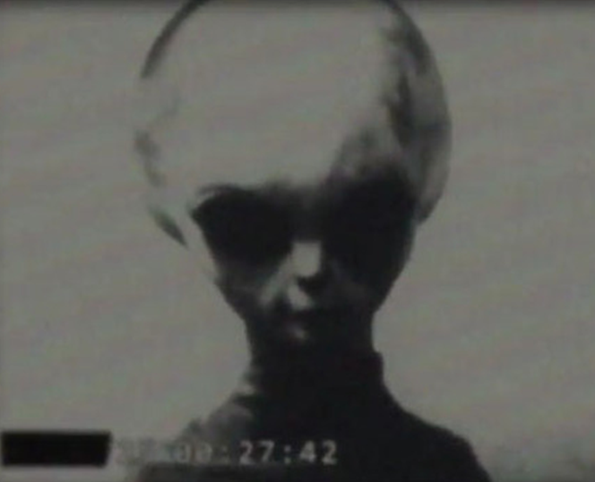
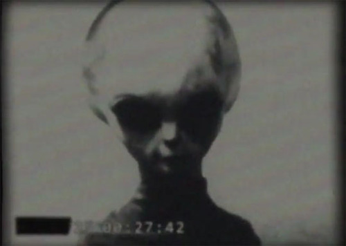
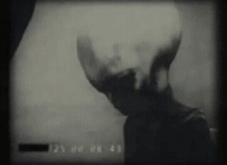
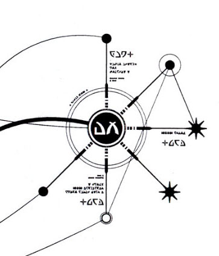
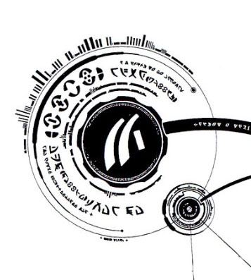
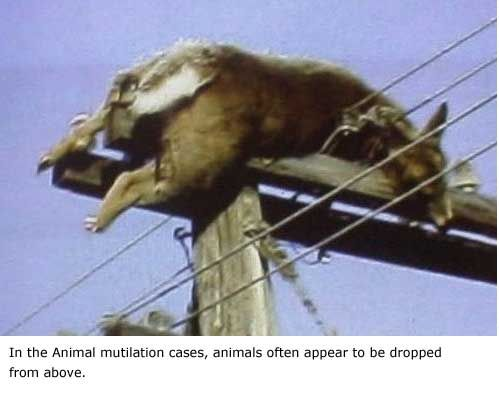

Here we discuss the grey extraterrestrial alien species. Contrary to the public narrative, there are numerous extraterrestrial species that regularly visit the Earth. In fact, they have all been doing so for many, many years. Ah, yes they do. They have their reasons and their purposes. The United States government, through the SAP known as MAJestic, has relationships with numerous such species, and are also aware of a much larger group of other species and races.
Here we discuss one of the most common and active species. They are an important species, as they have a very clear and defined role with humans. As such, they maintain a very special role within MAJestic.
The United States government has known about them for a long time now. In fact, we have known about them since the years directly after World War II. With this understood, they are NOT the first extraterrestrial species that the American government has met and interrogated. They are the second. This extraterrestrial species is not only very active in America, but it maintains a very important role in the entire world.
They are “famous” to many people all over the globe as “little green men”, as they are small in stature. For our purposes, we will refer to this species as “Type-1 extraterrestrials”.
A Personal Note
The moment anyone mentions that they have seen or met extraterrestrials, they are considered a lunatic.
This is not accidental. It is a manufactured narrative used to silence disclosures. You would think that after thirty years of exposure to the ways that the NSA, the CIA and other alphabet SAP’s are used to silence disclosures, that people would be made aware of this. But, alas most Americans are herded cattle. MAJestic is correct in this appraisal, and it has taken me up to now to fully appreciate this truth.
This blog and the “Metallicman” writings are not for the “great unwashed masses” to read, parse and disparage. It is for others. Hopefully, you are one such person. If so, then please read on.
This is the truth, well at least what I understand as the truth.
Notes on my exposure
I was exposed to this species [1] during entry into the MAJestic organization, and later [2] during my training for my role. During my operations I had no dealings with them. Instead, I dealt with another group of entities. Not this one.
All of the information provided herein are based on the exposure that I had with them while I was in MAJestic training. The little that I know outside of that had to do with some events that were tangential to them, and which I cannot speak about at this time.
When I refer to “outside sources” I generally mean either “outside of MAJestic” and on the internet, or second-hand information that I obtained though unofficial MAJestic sources. All “outside sources” should be treated as suspect.
There is a lot of disinformation regarding this species. I wish to elaborate on what I know and to try to provide a much more accurate picture of them and their involvement with humans. Like everything else, when you encounter the “real deal” you will be exposed to ideas and concepts and realities that do not fit in to the black and white two-dimensional cardboard cutout narrative that is so popular on the internet. That is thus the bane of my narrative.
They are not what everyone thinks they are.
They have technologies and abilities that make humans look like infants playing with a pacifier. This is not a species to take lightly. Just so, we need not fear them either. They are performing a valuable service and have a very important role with humans.
The problem is that the role, their understanding, their objectives and our understandings are completely out of phase with each other. How can you explain the workings of a digital watch to a penguin? You can’t and thus, I have a very difficult time describing how souls are constructed, and why this species has an interest in our soul construction and layout. As well, and why it is important.
This is the real deal. You can read on, or else pretend that Reptilians want to take over the United States government by shape shifting. LOL. It’s your choice.
Humans meet another “intelligent” species
Personally, this was the very first extraterrestrial species that I ever met. So, obviously, it is quite fitting that I refer to them as the “Type-1” extraterrestrial species. This is the first type that I encountered. Thus “Type-1”. Makes sense, huh?
Please note that this is not the actual name of the species. It is not what they call themselves. As in “Hi, my name is Zorga, and I am a type-1 extraterrestrial. Nice to meet you.“
Nope they don’t use this term, or anything like it, as far as I know.
Nor, is it what MAJestic refers to them as. They refer to them as <redacted>. The MAJestic naming nomenclature was established early on in the late 1940’s, and began with “Extraterrestrial Biological Entity” ####. (Always shortened to EBE ####.)
Astounding Revelations
This species is confusing to us humans.
That is because we have made numerous assumptions regarding all life in the universe. This species has thrown all our assumptions about life “out the window”. Many of the initial scientists who first met these creatures just couldn’t get around their inherent biases, and assumed understanding of the universe. And, this caused decades of confusion and misunderstandings.
Our “scientists” in the years immediately following world war II felt that it was a rare thing for any species to attain a degree of “constructive” civilization. They believed that if a species could attain spaceflight, they must be more advanced than humans. Maybe, they believed, 100 or 200 years more advanced. They also felt that they must come from a solar system that was close, and that had a star similar to our own (A class “G”.).
Their assumptions are the same assumptions that many in academia still maintain. It’s a carryover from Newtonian -based scientific study. Our assumptions are based on what we know of the world around us. It’s a science built upon careful observation. If you don’t observe something happening, then it just doesn’t happen. For that is, after all, the “scientific method”.
Using what we know of life on this planet, these scientists have made the following assumptions and extrapolated the assumptions to ALL life…
- All species evolve naturally.
- Each species has only one form.
- Each creature has one singular fixed consciousness.
- Each consciousness is associated with one individual soul.
- Each species propagate through naturally evolved means.
- The human species is the most advanced in the universe.
These are all very big, and very erroneous, assumptions.
The Type-1 Extraterrestrial Species
Because of that, there have been all sorts of misconceptions regarding this “Type-1” extraterrestrial species. Everything that did not make sense to the researchers needed to fit into pre-defined “boxes of dogma”. Their presence has forced MAJestic to reevaluate our humanity and our place within the universe.
This species…
- This is a manufactured species. What we encounter is not wholly naturally evolved. (Oh, at one time, basic components and the root DNA must have been, certainly. But not what we encounter today.)
- This species has numerous physical forms. Each form is specific for the task at hand. One form might be as an aviator, while another might be a doctor, still another might be a GP. (Here, I label the variations as “A”, “B”, “C”, etc…) The various physical forms appear different. We, as humans, assume that they are separate species, when in reality they are different forms of the same species. Humans have two physical forms; male and female.
- This species possesses mobile consciousness. This is an inherent consciousness that can migrate from physical body to physical body. It is not fixed to a specific body. Humans have one consciousness that is associated with a specific human body. This species is not like that at all. One second their consciousness can inhabit a body on Earth, and a split second later, it could co-habitat a body located on the Moon.
- This species has a different soul configuration. They do not have an individual soul tied to an individual consciousness. Instead, this species has a singular, and complex, “master” soul. All, and every, species consciousness are tied to the “master” soul.
- This species has mastered their evolution. They have incorporated modification of DNA into their society, and have developed forms and shapes for specific roles and purposes. Some of which we encounter.
- This species is impressively ancient. They have mastered spaceflight, and genetic engineering long before they first started interacting with the Earth. We know that they have interacted with early humans at least 30,000 years ago.
The “Little Green Men”
The reader can go on the internet and read all kinds of stuff on these creatures. Most of which is nonsense.
Conventionally, it is all treated as a kind of joke. Mostly UFO researchers, and their ilk are treated as fools. Mentioning UFO’s and extraterrestrials are considered to be career-limiting moves.
However, the real truth is that there are elements inside the United States government that treat extraterrestrials and their technology with absolute seriousness. It is considered so important to National Security, and the security of the human race itself, that not even the President, and the elected officials are privy to the knowledge.
It is very rare for an elected official to be part of the MAJestic organization. They are purposefully and intentionally “left in the dark” unless the issue is of a military matter.
“The truth is, Macey, we haven’t actually made direct contact with aliens yet. But when we do, I’ll let you know.”
-President Obama (D). His response to a little girl on the Ellin DeGeneres show when she girl asked him “If aliens are real.” February 12, 2016.
When I was first introduced to MAJestic, I was told that my role would be very important, and that the organization that I was part of was the most important organization on the planet. I was told that our objectives determined the future of mankind.
It wasn’t something trivial, like dancing on the Ellin DeGeneres show.
Here, I will try to clarify some key points and help the reader sort out the nonsense from the truth. As, most of what you find on the internet is just that; nonsense.
All this being stated, we must keep in mind where my information comes from. What I know about this species is derived from [1] first hand personal experience, and my training relative to my [2] involvement in MAJestic, [3] <readacted>, and of course [4] the <readacted> at <redacted>.
I am NOT an expert.
For starters, they do NOT have green or grey skin. Their skin has a decidedly light non-human skin color and complexion and thus many people commonly refer to them as “grey” aliens. In every single instance that I have met them, the lighting was favorable to their species (not to human eyesight). This was a (barely) visible light in the red spectrum, and to my eyes everything had a red color to it. It’s pretty darn difficult to see what their skin color actually is under that specific type of lighting. Anyone who has ever gone into a “dark room” to develop photographs can attest to this fact.
In any event, what I can say is that their skin has a different texture and appearance to that of the skin on a human or a terrestrial animal. It more resembles the skin found on a dolphin or similar creature.
Below is an actual photograph of a Type-1A extraterrestrial. Obviously taken a while ago and using traditional (not digital) photographic equipment. I believe that any actual and real images regarding this species originates out of Russia. America holds on to every image it has like it is made out of gold.
Notice one of the most important points regarding this species. This species cannot sustain “natural” human-type “daylight”. It hurts their eyes, and is generally uncomfortable to them. For them to move about on the earth, they need to put these kinds of special lens caps over their eyes. Thus, they rarely venture out on the earth in broad daylight. They travel at night, if at all.
In the photo above, the Type-1 entity was filmed under red light, and the images processed appropriately using period (1950’s – 1960’s) photographic technology. This is why the pictures seem dim, and not all that clear for a black and white photo or movie clip (note also that these images are obtained off from a movie clip).
"…and we found out so far there are 18 different alien species that we know about monitoring Earth".
-John Lear
This is a quote from Mr. John Lear who claimed that he was involved in the reverse engineering of extraterrestrial vehicles at the “Area-51” research site for the United States government. There are many who claim that he is a fraud and a profiteer, while others claim that he is legitimate. I do not know what to think as his experiences are quite unlike my own. But, he made some interesting quotes. Here is one of his finest.
When people think of extraterrestrials they often think of little grey-green men with big bug-like eyes. While there have been many parodies of such creatures on American media, they do tend to represent a historical archetype.
All you need to do is conduct a Google or Bing image search to get the typical CGI and artwork related to the “alien” archetype.
This historical archetype is quite curious. Often this description refers to various families of a specific extraterrestrial species. In particular, it tends to describe a sub-species of Type-I grey “aliens”. While these extraterrestrials have become a folk icon in many parts of the world. They are most iconic in the United States. Indeed, no place on the earth is more fixated on this iconology than the United States. The United States has become the de facto repository of Type I Grey extraterrestrial encounters.
Name and Conventions
Personally, they NEVER introduced themselves to me ever.
They provided instruction, direction, and information. That was it. There just wasn’t any formalities involved. Nor was there any back and forth banter so characteristic of conventional human speech.
I have read reports (on the internet) that they have a name that they refer to themselves as. This information is along the lines of “propagation of the extraterrestrial narrative”, or in other words, an attempt to stitch together two separate theories into a unified whole. The reader hits their forehead and goes “Ah ha!, it all makes sense now!” as some of the disjointed nonsense on the Internet starts to align up with other theories on the nature of mankind.
“When addressing Americans they call themselves EBAN.”
To me it looks like someone is trying to piece together some Zecharia Sitchin with some new-age Zeta Reticuli speculation.
Let me tell you guys this. When we met them in person they did NOT address us at all. They didn’t utilize any of the welcoming or introductory gestures common by terrestrial humans. They do not bow, shake hands, nod their head, smile or glance downward. They do nothing of the sort.
FOR THE RECORD. They communicated their intentions telepathically and instantaneously. They never provided any physical acknowledgments as far as greeting or introductions in any way.
Very Old Species
While they appear to be a conventional American popular phenomenon, they are actually a long duration phenomena. It is one that has been present on our world for many, many years.
They are, indeed, an indomitable race of beings. There are substantive representations of these creatures, or those like them for the vast bulk of time that humans have been around. This includes artwork in Egypt and through the middle ages as well.
Descriptions of these creatures, as well as the vehicles that they utilize are found repeatedly in archaeological circles. Though the descriptions given to these depictions are always something other than what they actually represent.
Typically they would refer to these extraterrestrials as Gods; demi-gods, angels, demons, or children of gods. They were never considered to be animals, other human races, or servants of gods. These creatures have been visiting Earth for thousands of years, and have been on Earth before modern man came into existence.
For the considerations here; whether accurate or not, the term “modern man” refers to physically similar humans to contemporaneous humans with the ability to produce documentation in a language of some sort. This is the so called “historical” humans. They reach back to around 6,000 to 8,000 years ago depending on your method of dating and base presumptions.
- Historic humans date to maybe 6,000 to 8,000 years ago.
- Pre-historic humans date back to around 30,000 years ago.
- Proto-humans date back even further to around 400,000 years ago.
- Intelligent-primates date back to around 4 million years ago.
Sub-Species or Type Configurations
There are different “families” (races or species) of Type-1 grey extraterrestrials.
Their similarity to each other extends only to their physical appearance, and physical makeup and biology, and not to their origination point. For purposes of simplicity, I use my own classification scheme to describe them.
- Type-1 species members all have the same central hive/matrix soul.
- Type-1 species DNA might vary from sub-type to sub-type.
“Those Who From Heaven To Earth Came". They landed on Earth, colonized it, mining the Earth for gold and other minerals, establishing a spaceport in what today is the Iraq-Iran area, and lived in a kind of idealistic society as a small colony.
They returned when Earth was more populated and genetically interfered in our indigenous DNA to create a slave-race to work their mines, farms, and other enterprises in Sumeria, which was the so-called Cradle of Civilization in out-dated pre-1980s school history texts. They created Man, Homo Sapiens, through genetic manipulation with themselves and ape man Homo Erectus.”
― Zecharia Sitchin
There is a large amount of confusion, speculation and disinformation concerning these creatures. Some of the disinformation is intentional. Some of the misinformation is due to confusion. Some of the information on the Internet are outright lies generated by profiteers, hoaxers, and just those with a malevolent bent.
Thus the information that I present here will differ from what one will find elsewhere.
Please be advised, and aware of this fact. What is written here is as accurate as I can make it, and in so doing it will many times be at odds with accepted conventional extraterrestrial lore. My thoughts on them here (the Type-I grey extraterrestrial race) might shed some information to help clarify their background and purposes with humans.
I have some strong opinions that fly in the face of conventionally accepted norms relating to this race. These are my opinions. They are only my opinions, and as such, might be wildly divergent from the actual and absolute truth.
Please accept them as such.
When I present them, I try to explain why I believe this to be the case, and how it impacts us as humans. What I believe, is at times, is not in agreement with any more or less “official” MAJestic policy, and also might be completely out of date. (I wrote this transcription over 15 years since I was retired from the MAJestic program.) The reader must understand that.
Species Introduction
“I believe in aliens. I think it would be way too selfish of us as mankind to believe we are the only life-forms in the universe.”
-Demi Lovato
This species is, by far, the predominant allied-extraterrestrial-species that has (active) treaties with the American government.
Now, this species does not deal with the United States government in the “normal” channels. They do not communicate through ambassadors, or a consulate or embassy. They do not chat with Senators or Congressmen. They do not have a “red phone” with a direct line to the President of the United States. Instead, they have a direct communication line with the agency that handles all extraterrestrial matters for the United States; MAJestic.
In this sense, and for all future reference, MAJestic is the organ of the United States government. It operates as a SAP “carve out” within the military, technical firms, and the government.
This is also, apparently, the most directly-involved extraterrestrial species on this planet and in the solar system. (Others are more or less, visitors, hidden and working behind the scenes or taking on other roles.)
This species has been on the earth for a very long time. (A very; very, long time.) Now, for what ever it is worth, this is also the particular species of extraterrestrials that I have the most experience with.
So, while I have personally seen a few other types of various extraterrestrials, it was only the “Type-1” aliens that I had any real or significant (direct, first hand) exposure to.
- The type-1 species operated on me and gave me the EBP. They also worked with me in training and operation of it.
- The type-2 species, the <redacted> interacted with me though the EBP. I was entangled with them for three decades, but I have really never physically seen them. Though, for a selection of reasons, I have a great intimate understanding of them. My interactions were all via the EBP and the ELF implants.

They do exist. This race of extraterrestrials does exist, and is not some kind of Internet hoax.
This species is a very common and very important extraterrestrial species.
They exist because [1] I have seen them (with my own human eyes, as well as being entangled), [2] worked next to them (in close proximity – at arms length), and [3] had physical dealings with them (we communicated, handed things back and forth, and worked together doing tasks). My experiences are physical and actual.
Here, I write what I know about them, and place caveats on how I obtained this knowledge. Reader, please note; just because I personally believe something does not necessarily mean that it is true. But what I do present is the best information that I have about these creatures.
Let me take a moment to address this issue for the slower readers to this manuscript. The Type-I grey extraterrestrial race does actually exist. They do exist. They are real. They are not some kind of apparition or mysterious vision.
I have actually seen them. I have seen them with my own physical human eyes (long before I started to wear glasses). I have worked alongside them. Though I have never physically touched them (They have, however, touched me.); their hands or skin, they seemed real enough and physical enough to me.
- The closest that I have ever been to a member of this species is about six inches.
- They are always shorter than I am. They are not dwarves. They are just thin in stature and about the height of a petite girl. They tend to be around 8 to 10 inches shorter than I am.
- They have really, really long articulated hands. They use them like a Chinese person is an expert using chop-sticks.
I positively know them to exist. They do exist in the physical world that surrounds us. They are intelligent. They are driven and focused.
Appearance Notes
They wear clothes like humans wear. This tells me that in some very significant ways, they developed into intelligent tool-manufacturing creatures along similar lines to what we humans have followed.
The garment that I am most familiar with is a deep dark blue one-piece jump suit (as best as I can determine under red color light). The garment had a kind of turtle neck, and long sleeves and pant legs. There were no pockets. I never saw buttons, snaps, clasps, Velcro or zippers on the clothing.
The clothing was always unadorned. There were never any insignias, elements or indicators of rank or occupation, or decoration in any shape or fashion.
They wore boots. These boots had a heel and a textured bottom for purposes of traction. You could tell by looking at the foot prints that they would make on dusty surfaces. The textured bottom looked a lot like wide lines or thick bars. They did not have any kind of pattern like you might find on contemporary hiking boots.
They look different from us.
Yes, that is true. But, they do not seem strange when you are next to them. They seem normal. They seem absolutely normal. While they might look different, the impression that one gets is that of another co-worker. You never feel like you are working with an extraterrestrial when you are near them. They seem normal and commonplace.
Background Information
As much as I know about them physically, the background information that I have on them is second hand.
“an extraterrestrial influence that is investigating our planet. Something is monitoring the planet and they are monitoring it very cautiously.”
-Sen. Mike Gravel (D-Alaska) in 2008
What I know of these creatures is a collection of what I have directly experienced, and a mixture of what I have read from other sources. I strongly advise the reader that secondary information should always be considered suspect.
Anything that I have not directly experienced should be considered as second hand information only. There is a large amount of incorrect information, and some of it has (even) found its way into the official journals and briefing papers of the government.
This is part of the sad legacy of extreme secrecy and compartmentalization within the program that we were involved in. In fact, there is also a great deal of misinformation and outright disinformation on the Internet. Often times I would read a piece on the Internet and shake my head in disbelief. Honestly, I wondered, how could anyone come to the conclusions that they have been drawn to.
Certainly, some of the things written on the Internet came from a complex mix of profiteers [1], disinformation experts [2] and amateur hoaxers [3]. Yet, please understand that for the most part, my experiences with this race of extraterrestrials have been positive [4].
[1] Profiteers; those who write books, make and give lectures, or host classes for the sole purpose of turning a profit. This is done in defiance of the actual truth, and whether they have actual information to share.
[2] Disinformation Experts; usually paid employees of various organizations who want the information so presented to be confused, or buried under a mountain of confusion. These people may or may not work for a government agency or unit, and they include people from simple bloggers, to Photoshop® experts, and paid research associates.
[3] Hoaxers; those who for whatever reason, boredom, fame, curiosity, commotion or low self-esteem create a staged event of some complexity and associate it with an extraterrestrial encounter.
[4] This is as true a statement as I will ever make. Yes, I have never had any bad, worrisome or painful experiences with this race. Yet, any troubles that I had, most certainly, was associated with memory blocking and compartmentalization.
Therefore, as painful as it is, I must also present the converse to the reader. I might not have any bad experiences with this race because they did not let me remember those experiences. (Please try to keep an open mind regarding what I present here. Listen to what I present, but doubt all of it.)
I would like to make one final comment before we explore this subject further. There are many species that can be assumed to be, or identified as a “grey extraterrestrial”. Some have five fingers. Some have four fingers (like “my” type-IA), and some have three fingers. This writing concerns itself with one specific species. It does not concern itself with other species that might be similar in various ways. Such as this…
Here’s an interesting discovery. I don’t know how real or factual it is, but it certainly is interesting.
A mummified three-fingered hand with eight inch fingers has been found in a Peruvian tunnel in the desert. While first inspection may lead one to conclude that it is nothing more than an imaginative man-made creation, examination by a physician in Cusco, Peru, revealed that it is composed of skin and bone, with six bones in each finger.
The bizarre-looking hand was allegedly presented to Peru-based researcher Brien Foerster, who runs Hidden Inca Tours , along with a small mummified elongated skull and a tiny mummified body. The local person who has possession of the items told Foerster that they were found in a tunnel in January 2016 in the southern desert of Peru.
The tunnel was closed-off by a large stone door and inside were two sarcophagi containing the body parts, which had been covered in clay. He indicated that he did not want to sell the mummified body parts, but just wanted to know what they were and who or what they may have belonged to.
The Internet & Other Writings
“They were once fairies and elves. Now they are creatures from beyond the stars because you no longer believe in anything but humans.”
― Thomm Quackenbush, Artificial Gods
While I greatly lament the amount of disinformation and inaccuracies that I have come across concerning this species, I must admit that that bulk of (general) information about them is actually fairly accurate. (More or less, with some rather extreme caveats.) To repeat; most of the general non-specific information about this race is generally accurate.
I get the impression that, at some time in the (recent) past, someone in charge of the redirection and disinformation efforts made by the United States government just threw their hands up in the air and gave up.
That is right.
I honestly believe that as far as this race is concerned, the United States government just tries to confuse the issue. They no longer try to denounce it. Therefore, there is quite a bit of accurate information about these enigmatic creatures on the Internet. There is also a great amount of outlandish disinformation as well. It is a legacy of intentional seeding of disinformation as well as profiteer activities that have so occluded this entire subject.
My greatest concern is that many reports are flavored by a personal bias.
- Those who are religious might state that they have religious motives.
- Those of a purely military background might caution one against their “warlike” ambitions.
- Those of a more intrusive or scientific bend, might be more withholding of commentary.
- Those of a mischievous mind would present all kinds of nonsense to a gullible public.
All these viewpoints are colored by the experiences and the background of the observer. Whether you like them or hate them, none of these viewpoints holds an accurate portrayal of this race of beings.
I find that I agree with the general physical descriptions of these beings to some extent. While I have not experienced the same kinds of events that are often reported, they do seem to be in alignment with my own personal experiences.
No one, including myself, has a truly unbiased understanding of these creatures. However, given the diversity of opinion and the great variation of experiences, I must conclude that many of the reports seem to be accurate and seem to agree and be in line with my experiences.
All human interaction with this species is influenced by the predetermined interests, religion and spirituality of the observer. It is truly rare to find an unbiased opinion on this species.
Work Methodology
"There were pictures of the bodies, which looked like the beings known as 'the grays.' … Some of the little grays appeared to not be a reproductive-capable species.
The autopsy guys concluded, according to the report, that it looked as if they had been cut out of a cookie cutter - clones with no alimentary tract. They did not ingest or process food as we know it, nor did it appear that they had any system of elimination."
-Robert O. Dean
Let’s start by describing how they operate in a group setting. That is, how they contribute and work together. Dogs form packs. Cats work independently. Humans, depending on the circumstances, chooses the preferable organizational structure. But what about this species?
I can tell the reader this truth. When they work, they do so with organization and planning. If there is a task to get done, they do it as if they were ants. The individuals swarm out, do their specific tasks at the proper time, and then return to their initial locations. They do so like ants following the direction on a pheromone trail.
However, they are decidedly not ants.
They are organized, and contribute to the entire task utilizing their own specific assignments automatically. While they do seem to appear to have a small degree of individuality, it is not obvious unless you are familiar with them. Thus, if you spend any amount of time with them you will notice this. They are not robots. They are neither plants nor androids, but rather a distinct different race that has a completely different way of thinking than we do.
This is the way that they conduct their business and tasks. But they are decidedly not hive insects, nor are they derived from insects (I personally believe.). Unlike their overseers (not the correct word, but the relationship is complex), the <redacted>, they do possess a bony frame. They are not invertebrates.
Soul Configuration
For our purposes here, every creature has a soul. This is a organized collection of quanta that operates in predetermined movements in and out of the physical constraints of both time, space and dimensional variations. They are classified in their arrangement and "dances" with other soul components. The study of souls is quite complex and beyond the scope of this article. For now, the reader should just accept that no two souls are alike. They are all different and vary from species to species.
Yet, I must digress. It seems to me that the fundamental base soul structure is inclined to what we, as humans, determine as elementary; the insect biology. Yet, it has been my experience that there is significant evidence that the insect biological – quantum soul structure is the superior structure. (Or, maybe this is my entanglement speaking…who actually knows?)
However, that debate and analysis is to be shelved for yet another time.
Their soul structure and level of technology enables them to have this ability. The ultimate effect is one of great efficiency and precision. That is one of the key indicators that point to a hive or a matrix soul structure
A hive mind or group mind may refer to a number of uses or concepts, ranging from positive to neutral and pejorative. Examples include:
- Collective consciousness or collective intelligence – concepts in sociology and philosophy
- Culture – A collective of knowledge, art, artifacts, symbols and social ritual
- The apparent consciousness of colonies of social insects. Such as ants, bees and termites
- Swarm intelligence, the collective behavior of decentralized, self-organized systems, natural or artificial
- Universal mind, a type of universal higher consciousness or source of being in some esoteric beliefs
- Group mind (science fiction), a type of collective consciousness
- Egregore is a phenomenon in occultism which has been described as group mind.
- Groupthink
Though which one is specifically associated with this race is up to debate. No one, apparently, is significantly interested enough in this issue to pursue it.
We know that it is either a matrix or a hive soul structure, but we do not know or understand exactly their exact configuration’s classification. That is, to say, we know what it is, but not what it is formally classified as.
The reason behind this is that as humans, with an individual soul structure, the hive or the matrix structures are not particularly well understood by us. Not yet, at any length. The primary differentiation characteristics are of such an extremely different nature than what we, as humans, can understand that we cannot comprehend the differences.
We do not specifically know which soul structure that this race utilizes. There is a debate where some are absolutely convinced that they have a hive matrix soul. They attribute this to their organized behavior that is often witnessed. But others disagree with this because they can provide individual discussion and independent thought on demand. That is not a core element of a hive soul structure. Thus they argue that they must have a matrix soul structure instead.
Specious arguments for “ivory tower” types!
Personally, I don’t know exactly what their specific soul structure is. (Though I do actually have an understanding of it’s base grouping. All of <redacted> understood soul groupings and configurations.) It is entirely possible that their soul structure is something other than either a hive or matrix structure. It is just that we humans don’t have the science, and vocabulary to understand it at this time in our state of technology advancement.
Summary;
There is an internal debate into how this species soul interacts and behaves. Some refer to it as a “hive”, while others refer to it as a “matrix”. In any event, the soul configuration is very different from the souls of humans.
Society
These extraterrestrials have a different soul structure than humans have. Since a soul structure influences the physical manifestation of a creature, it can also reflect upon its actions, thoughts, motivations and desires. Thus, in so doing, shape the society that those physical manifestations create.
Humans have wars and crime; beauty and art. We have such a wide diversity of physical manifestations of our souls. But this is due to the complexities of our quantum make up. Not every species has these same manifestations.
Some appreciate a certain of music, while other appreciate a certain kind of art. Some appreciate “open space configurations. While other appreciate color blending; and even scent blending’s. (This can be quite difficult to explain.)
- Of course we would have crimes, banks, governments and wars since there are a percentage of our members who are “service to self” inclinations of sentience.
- Of course we would have art, poetry and the beauties associated with them because we have members involved in “service to others” inclinations.
- We have religions, fads and pop culture because we have members involved in “service to another” inclinations.
However, this is not true with an already homogenized hive / matrix race. For the Type-IA (greys) extraterrestrials they are unified in one single purpose and intention. Their soul configuration is very stable and (for lack of a better word) cultivated.
We don’t know which kind it is specifically, but it seems to be more or less a variant of a matrix, hive or group structure (as stated previously).
(For simplicity in this narrative I use the terms matrix or hive interchangeably when referring to this species.) In any event, all the (Type IA grey extraterrestrial) individual physical entities that we encounter (seem to) have quantum level appliances embedded in their quantum soul bodies.
Actually, it is more accurately defined as a combination of both artificially contrived and biologically developed (inherited) abilities. This is difficult to understand, as we as a species don't really recognize the non-physical world in any way except as how it interacts with our physical world.
Here, we argue that this species and their civilization have developed technologies at the soul level. These technologies developed and create soul-level artifices and mechanisms that they utilize that assist them in their physical bodies.
Thus they are a biologically-supplemented [9] space-based [10] society.
[9] All members of this race have cybernetic devices embedded inside their bodies. But instead of physical contrivances that we as humans would understand, they have quantum level appliances embedded in their quantum cloud. These devices have a very small physical component that can be seen and detected with the right tools and knowledge.
[10] This race is not centric to any specific planetary or environmental niche. But rather can adapt to a wide variety of environments through biological creation of physical bodies.
Thus they are space based. Initially, they evolved naturally on a planet, and then migrated to other planets in other solar systems.
Once they were able to modify their body structure via DNA mapping, they were able to adapt to different planetary environments, and thus have since evolved into a truly space-borne species.
They have a common social memory complex [11] that allows them to collectively function as areas of a group-mind.
[11] They do not have a great wide diversity of individual memories but a kind of central shared memory. This is quite different than that of us humans.
Thus, whether it is due to the nature of their soul structure, or due to their technology, we do not know for sure. We have NOT mapped their soul structure, but they have mapped ours.
My personal unique opinion is that they have evolved over time from a simple matrix quantum soul construction, to that of a quantum-appliance augmented society.
This evolution apparently manifests as a borderline structured hive semblance, but with an active matrix quantum soul organization. They maintain a great reliance on cloned (or more accurately; manufactured) entities for occupation in various dissimilar solar systems. While their soul structure encompasses a huge amount of empty physical space, the physical shapes of this race takes on many forms. The forms that they take on vary from galactic region to galactic region.
They apparently are very active on the earth, and they are known throughout this region of local space. But, no one knows the true extent of their activities. We do not know if they are prevalent throughout the galaxy or even in other galaxies as well. No human knows. My guess, perhaps it is though my own ego is that their adventures are limited to this region of our galaxy and does not extend greater than 15% to 20% of our galaxy. (Still an amazing percentage!)
Most importantly, what we experience in our own solar system is unique to it, and not reflective of their race as a whole. Their appearance in our solar system differs from that of what they look like in other solar systems.
They customize their biological physical form to fit the region that they occupy.
So their form and appearance to us in our solar system is very different from the form that they take around another solar system.
Biology
“In After Disclosure, Dolan shares an experience he had with a politician who was deep underground in a military base.. He was briefed on the extraterrestrial reality and said that ET’s and UFOs are just the tip of the ice berg when it comes to information that’s concealed from the public.”
-http://www.afterdisclosure.com/2011/04/breakaway.html
There are detailed studies of the biology of this species. MAJestic has indeed studied this species in great exhaustive detail. They have collected large numbers of deceased entities and conducted forensic examinations on them.
I was fortunate enough to be provided limited access to some of this information while <redacted> during the <redacted>. It was part of <redacted> that required that I <redacted>.
Access to the information can be found at <redacted>, <redacted>, as well as <redacted>. I parsed through it, but couldn’t make much out of it. Biology was never a great strength of mine.
Apparently their biology was fundamentally different from that of most terrestrial mammals. Yet, paradoxically, it was still quite similar in many fundamental respects. For instance, the proportions of the organs were unusual, but the layout was similar. They had two eyes, two ears, a mouth, two hands, etc.
The genetic makeup was different but also similar in many respects.
It was suggested in the <redacted> that we all, them and us humans shared some common DNA somehow. (Please refer to the speculation of active biological seeding by the progenitor species in the remote past.) Their organization, behaviors, and various elements of biology were strongly suggestive of that of an insect. But again, that is only myself “reading between the lines” with no formal classes in biology. (Most approved quantum archetypes seem to follow that of an insectoid form.)
The biology of these creatures were extensively studied and detailed in manuals at the <redacted>. Obviously, a number of biological specimens were obtained and dissected. There were more than just a handful of manuals. In fact, there was a rather complete full binder on these creatures. Obviously, someone has spent the time to study them and their biology and compiled a very detailed work in this regard.
Their biology was never really a significant aspect of my job description; therefore, I never studied the subject. To this day, I find their biology (and the biology of other creatures and species) rather boring. What I do know is from my direct contact with them, with some aspects of miscellaneous information thrown in for good measure.
The reader should note that they were always clothed. They were obviously like us in that regard. The clothing appeared to be of metallic structure, but in reality, it was a complex polymer with metallic elements. It was a woven cloth and fit them quite well. They had some variation in clothing, but not much. It was mostly functional in purpose. .
Their “uniforms” had no obvious decoration, nor any kind of insignia.
There was not any kind of indication of gender information. For the most part, the various types that most humans encounter are genderless and are NOT used for propagation, or breeding purposes.
I seem to recall that according to the <redacted> there was speculation that at one time they did originally have genders just like earth animals, <redacted>. The differences and details in regards to this is still locked in the <redacted>. They were not of my interest, nor part of my job description.
They do not have distinct individuality.
They act in conjunction with each other, and do not show or act with any kind of individualized personality. Unless you know them personally, they are very difficult to tell apart from each other. Once you do get to know one specific entity, it becomes confusing because that particular entity might occupy different extraterrestrial type-1 physical bodies.
Since they can do this; switch their individualized consciousness between different physical bodies, they are able to “travel”.
One physical body might be on the earth, and then they can instantaneously switch to another one on Mars.
That is pretty amazing, but not nearly so amazing as the concept that they occupy many such worlds all around the galaxy.
Thus they could, in an instant, move their individualized personality (focus) from say the earth to a planet around Gliese 876. This, to me, is truly amazing! Why bother with rocket ships? Just inhabit and set up colonies on widely separated worlds and visit them at leisure.
Vitals
According to the <redacted>, the approximate height of a type-1A (also known as a big-headed Grey) is from 3.5 to 4.5 feet tall. According to autopsy results gained between 1951 and 1978, they have an average weight of about 40 pounds.
The proportions of the head to the body are similar to a human five month fetus. They have no hair. Their eyes are rather large, but seem to be covered with some kind of biological covering like a grown sunglass lens.
I agree completely with this assessment. My physical interactions with them agree with this contention.
Limbs
They have unusual hands. They have three long fingers, and a very long thumb. The two longest fingers tend to be together like human fingers and are next to each other. They are however, contrary to what you might find on the internet, completely separate digits.
They are equally able to move all the fingers with equal dexterity. They rarely spread them apart when standing at rest. Thus it appears to the casual observer that they have a human like hand, but with extremely long fingers. Their knuckles are more pronounced and obvious than human knuckles. They are very adept using these hands and are surprisingly agile and dexterous with them. They seem to be capable of using either hand equally well. From my personal experience, they are neither left nor right handed. Which is odd, as all animals that we know of eventually favors limb use through habitual use.
They have very long arms. The arms reach longer than human arms. If they were to stand next to you, the hands would end up above the knee. For humans, the hands would end in mind-thigh.
I do not know about their feet. I do not know if they have four or five toes or how the toes look. I would guess that they might have some kind of major digit which might be equivalent to our “big toe”, but that is speculation on my part.
They wore boots with their uniform.
I do not know if they wore socks with the boots or not. My experience was never that personal with them. Obviously the books and writings in the <redacted> contained all this information and more. While I actually did perform a rather cursory review of this species while I was <redacted>, I simply do not remember what it had to say about their feet, ankles, knees, or limbs.
DNA
A kind reminder that this information is directed to the class “A” sub-species configuration of the Type-1 extraterrestrial.
Some researchers (on the internet) claim that the body shape is indicative of a very ancient species. But how they can possibly come to this conclusion is beyond me. They also claim that their DNA patterns lie within a pattern that is considered to be primitive.
I can neither confirm or deny that information. I would suggest to the reader that even if I were a doctor and conducting a forensic study on a type-1A body, that I would be unable to come to any of those aforementioned conclusions based on observation and our knowledge of DNA mapping.
Further, researchers claim that the way the DNA is shaped is in the opposite direction than human DNA.
Supposedly they have extremely large lung capacity and a number of organs that seem to have some curious functionality. Also, they supposedly have implanted “crystal appearing artifices”. All of this information is interesting, but I cannot confirm or deny the accuracy of this. It is all second hand information. I know nothing about the biology of these creatures except what I have read and by comparison with what I have seen.
The reader must remember that the physical body is a shadow or reflection of the densest parts of the quantum body. Thus the DNA is a configuration that is manifested by the quantum soul archetype. The reader must always keep this in mind. The quantum body is the actual repository of shape and form, and the physical is the densest portion of that form.
Skin Color
As I have stated previously, every single time that I have spent time with this species it was under their preferred lighting conditions. This was a reddish light. Normal ‘natural” light that is preferred by humans was never available to me. Thus, any information that I have on their personal skin color is from secondary sources.
According to secondary sources, including <redacted>, the species skin tone variation seems to be widespread, with skin colors ranging from bluish grey to beige, tan, brown or white.
There are other factors which appear to affect skin color, and one of them is the state of general health of the entity. This is true with humans, dogs, cats, and rats.
Supposedly, (according to the internet) skin color is known to change after they have consumed nourishment. This makes sense to me, but I have never seen them consume food in my presence.
Some claim (on the internet) to see individuals that seemed to have arms of a slightly different color than their heads or rest of their bodies. This would change periodically, but what this infers can only be speculated upon. I myself absolutely doubt this report, as they wear long sleeve tunics/coveralls and I have NEVER seen them roll up their sleeves in public. Since their arms are always covered, then how can a person see what their arms look like? Especially under that reddish light?
Finally, the reader should note that as far as I am concerned, they all look similar with similar skin color, shape, size and appearance.
Brain Capacity
They have a larger brain capacity than humans, but the benefits of this, is of course, speculative. According to the manuals, the brain capacity is estimated to be between 2500 and 3500 cc, compared to 1300 cc for the average human.
You can come across all kinds of strange and odd conclusions about this species on the internet. Some people claim that they have artificially grown brains, or brain portions, while others claim that they can insert memories into the brains in what ever pattern they wish.
This internet narrative shows a total ignorance with the technology of this species, their soul construction, the concept of mobile consciousnesses and the MAJestic role with them.
Now, these writings on the internet are all wrong, or if they did have this technology, they certainly don’t use it. The truth is that their memories are all shared, due to the nature of the matrix soul structure. They do not need, nor require the insertion of memory patterns. (After all, memories are controlled in the non-physical reality, not in the physical brain itself.) The vast bulk of soul compatibility and control is governed through associated quantum appliances located in the hybrid clones quantum soul body.
Instead, what they insert is “learned skills” for the specific physical body to utilize. They do not insert “memories”.
This is very difficult for humans to conceptualize. For we naturally associate memories alongside training. You learn something, by retaining the memories of your training.
This is a false understanding.
There are two completely separate things going on here. Firstly, there are memories. In the hive mind, these memories are compartmentalized into uniform-access, and personal-access. Humans only have one set of memories, and they are all personal-access only.
Secondly, there are training memories. These are “trained skills”. Just because your mind can recall somethings, does not mean that your entire body recall it as well. You can have a false memory of being a ballet dancer, or playing the guitar, but your physical body will fail at trying to obey the commands from the brain.
Nourishment
“The Greys seem to be fundamentally different than humans with some having atrophied digestive tracts as discussed in alleged military autopsy reports and may be absorbing nutrients through the skin rather than through a digestive tract.
The skin may function like the inside of our digestive tracts, that’s why some feel clammy and damp and smelly when touched. There is some evidence and speculation that the mutilation of animals and even humans, where the bodies are drained of blood, that some kind of food mixture using blood, is being externally ingested into their bodies through the skin.”
-Jeff Adams
It is reported (from secondary sources) that the Type-1A consume nourishment through a process of absorption through their skin. The process, according to those who have witnessed it, involves spreading a biological slurry mixture that has been mixed with hydrogen peroxide (which oxygenates the slurry and eliminates bacteria) onto their skin. Waste products are then excreted back through the skin.
I never saw any of them do this. So I do not know if this report is accurate or speculative. I do know that they have mouths, and I do know that they have been able to drink water with them. However, I have never seen any teeth. I do not know if they have any.
Odors
Some people have stated that the Type-1A species have a distinct series of odors that appear to be similar to a mentholated cinnamon smell. I do not know any of this.
When I went on my first off-world experience and I had my first exposure with the species, (as a human and an AOC in the US Navy) I did not smell anything associated with the Type-IA grey extraterrestrial species. I do not recall smelling anything at all.
Later, during <redacted> and training, I interacted with them performing certain activities. During that time, I never smelled anything either.
I have tried to wrack my brain and empty out all my memories of that time, but I must pitifully say that I cannot remember any particular smell associated with them. There might be various reasons for this. There are many possible reasons for my perceptions regarding this issue. Which one is correct or accurate is up to the reader to determine.
Communication
Apparently, some of them can talk. In fact, they seem to have a surprisingly good grasp of the English language. But, they do talk in a strange way. I think that it has more to do with the shape of their mouth and throat than anything else.
Personally, I have never seen anyone talk. Anything about the type-1A talking is beyond my experience. My experience simply is this, “They think – I react”
Using what I know from personal experience, and what I have read on this issue, I have come to certain conclusions regarding this. The communication from them, if you listen to them, is via a combination of vocal sounds with an adjunct support of some latent telepathic ability. The resultant effect is one of the ability to understand these creatures as they talk. No matter how strange it sounds to your ears.
But they usually do not talk, and instead rely on instantaneous thought communication. Their ability to use thought communication is always directed from a single designated person. The others do not communicate to humans or others like myself otherwise.
When I met them for the first time as an AOC in the Navy, they did not speak to me at all. All communication was via instantaneous psychic thought control.
This is a most pronounced fact, anyone who talks about their “language” and communicating through speech primarily is talking nonsense. They communicate primarily through instantaneous telepathy to humans. It seems strange that this is my experience. But it is true.
Why they are able to do this and how they can leads to some interesting conclusions. One of the key points is that all of us who worked with this species possessed EBP within our brains.
What we interpret as telepathy, could very well just be instantaneous radio telephony.
Personalty
They are not personal. I was never able to have a one-on-one deep-hearted conversation with any of them. Though there were times when I wanted to communicate with them, I had great difficulty in doing so. I do not know why, perhaps it had to do with <redacted>.
I really don’t know.
From my first exposure to them, to my last, it was always a consistent method of communication; it was one way. They initiated and directed the communication. It was also instantaneous and through telepathy.

It was a curious relationship. Whenever I worked with them, I felt like I could communicate with them telepathically, but I never (at the time) felt like I wanted to. Therefore, I never engaged communication with them. They always engaged conversation with me. This is a very, very important point, and it defines our relationship as humans with this race.
They have a manner of interaction with humans that involves a degree of control over the human mental processes. This is either natural, or through use of augmented internal processing appliances. In this way they can control the human thought patterns, thoughts, memories and emotions. They can do so in layers and degrees of ability.
For instance, when I was “off-world” for the first time, they were able to control my memories, and how I reacted to meeting this race for the first time. They didn’t control my sight, but rather how I reacted to the sights before me. How they were able to do this is not known to me.
I strongly suspect that this kind of control is used on all humans that they interact with.
In fact, it is possible that they control the MAJestic leadership in this way. And thus, the MAJestic leadership still continues to act and behave in a contrary manner than what would normally be expected of a “normal” and “typical” American in this decade and current cultural environment. I was able to see the difference in use of this technique because I interacted with them as a <redacted>. I could tell and see the difference in mental interaction.
They do not know of individuality. That concept is alien to them. Both their physical bodies, with or without quantum appliances, and their quantum soul structures exist without individuality. Some say that they are interested in the human concept of individuality, I know nothing of that. If there is an interest, it is academic only.
I suspect that any interest that they show is a feigned interest at best.
Religion
I have read some reports about this race “chanting” and being overtly religious. That is complete nonsense.
This is such an obvious red flag that it is a guarantee that the person who is making this statement is either a hoaxer, profiteer or disinformation expert.
They are not at all what we would consider to be “religious”. I wish to make this absolutely clear. They do not worship a deity. They do not make icons or statues of any kind of deity or saint. They do not chant. They do not create paintings. They do not create sculptured statues. They do not create carved “fetishes”. They do not hold special events in favor of any kind of spiritual expression of any kind. There are no “ten commandments” or religious rituals that they follow.
Here is an example of the kind of nonsense that one can find on the Internet about these beings. This is all made up. There isn’t a flake or spec of truth in it. It is all pure dribble. (I wanted to use stronger language, but I was afraid that it wouldn’t be appropriate to do so.)
“The Ebens worship a God. The pope feels their God is the same as ours. The Ebens worship God differently, but NOT so much. In fact, OSG brought artifacts of the Ebens’ God that fits directly into OUR [Christian] God. Several Eben paintings, sculptured statues and carved fetishes were similar to our God. In fact, the story of their God – appearing thousands of years ago on SERPO and setting up religious sects on their planet — is similar to our story of Jesus. The Ebens chant verses, which, when translated, are similar to OUR prayers. The Eben chants contain 26 verses which they repeat every day at their prayer hour, which is in the afternoon (SERPO day).
The chants sound like Tibetan chants. On a particular Eben day of their year, the Ebens expand the chants to 38 verses. The extra 12 chants pertain to “angels” — which we have translated to mean “saints” – who have helped the Eben society.”
-Serpo.org
While their technology is quantum based, and their understanding of soul is substantially superior to ours, they do live a more or less spiritual life. One that is by far superior to anything that we humans could possibly conceive of. We would not recognize their spiritual activities as such. They do not have a religious life at all.
An understanding of how the soul works, to the level that transcends time and space, is a far superior spiritual understanding of the universe. They truly understand their role and understand how humans can help them achieve their overall race goals in this regard. They understand not only the quantum mechanical influences of the soul, but also the functional tracking of it through time, space and across the dimensions.
Once should avoid getting swept up in human religious equivalents when discussing this species. They are not at all applicable.
Farming of Humans
“The more you know, the crazier you look.”
-Anonymous
Perhaps the most accurate and poignant aspect that I can present about this race is that they tend to the nursery that we are part of. They are the gardeners, the policemen, the guardians, and the caretakers of sentient life on earth.

In our section of the galaxy there are a number of solar systems that are used as a kind of incubator for the development of sentient life. It is not only our solar system, but includes the Alpha Centauri system as well as a few others.
These environments are protected and monitored by a (sort of) federation of planets who has established that the <redacted> race as governing ability. To this end, it is the Type-I grey extraterrestrials who are involved in “tending” and “cultivating” humans toward ultimate sentience.
They have been doing so for some time.
Their goal is to help shepherd the human race towards a more “perfect” or “ideal” form or spiritual soul archetype based on our biology. But that is ultimately not possible, as entities such as mammalian humanoids tend to develop in different ways.
Therefore this species benefits significantly on a personal level whenever certain humans adopt an archetype direction that favors their spiritual intentions.
They, in other words, tend to this nursery to help cultivate the human race for the goals and objectives of the <redacted>. But, in the case of wayward humans who’s archetypes do not fit into the ideal (as described by the <redacted> race), they can then possess and utilize them as they see fit. Ultimately either [1] absorbing their soul quanta, or [2] farming them like a sort of cattle (to obtain their quanta and life experiences).
This is very disturbing to me.
In short, to put things in a very simple form, it boils down to two development choices. (There are other kinds of sentience’s. But for 85% of humans, they develop into but two specific kinds of sentience.) Both are a function of the “direction of” sentience. (A kind of interim sentience that is not yet fully formed.)
[Option 1] Service to Others Sentience
If one becomes a “service to others” related entity they are able to evolve to a “purer” state. We can develop into a series of new forms and soul archetypes. As we grow and learn, we advance. We shed the old, and expand our mind, our spirit and our very being. We reach out towards God and work towards that goal.
This is a good things, and doing so enables us to continue towards a development structure in accordance with the <redacted> race’s objectives.
This is, I believe a “pure” evolutionary path. It is a path that is considered to be the ideal by the <redacted> race. It is a harmonious path which will lead to great benefits to the human souls which strive towards this ideal.
[Option 2] Service to Self Sentience
If however, the human entity shows a strong propensity for “service to self” type behaviors that entity is permitted to evolve appropriately as well. However the evolution will take on a much more “physically grounded” bent.
This is one of either two directions. They are ether [1] absorption into the Type-I grey extraterrestrial hive, or to [2] evolve into a “farmed” creature. The choice that is made is determined by the overall soul quanta configuration that is the ultimate result of the personal decisions, behaviors and actions of the entity during their reincarnations on the earth.
The differences between a service to self person as compared to a service to others person can be quite stark.
For example, here is a video that records an exchange between Congress and a member of the Obama Administrations GSA who was quite lavish in the spending of government money. One of the events involved spending a large amount of money to assemble bicycles. The official justified spending the money because they later donated the bicycles to children. But, dear reader, that is a service to self activity. A service to self person ALWAYS uses other funds, money, abilities, tasks, time, or people instead of their own in providing things to benefit others. Go here.
The better decision of the two options will lead towards absorption into the collective hive. They will become part of the Type-I grey extraterrestrial collective. This will be either as a member or as a subservient species. The worse of the two options is to become that of farmed cattle for this race.
This means that the human who chooses this path will choose an eternity of suffering. This will happen in one way or the other. They will experience an endless cycle of reincarnation events all directed towards pain, sadness and hurt designed to maximize collective experiences.
Then, the Type-I grey extraterrestrial collective would steal or farm these experiences though obtainment of the quanta. The entity would then begin again as if they never had that experience in the first place. It is, then a living hell for all eternity for that soul. It becomes a endless cycle of reincarnation into difficult lives, where the entity would experience pain and sorry, only to have those experiences stolen from them; forcing them to relive that experience over and over again. Often the same experience will occur time over time, but in slightly different manifestations.
The Type-I grey extraterrestrials consider humans to be their “property”.
The “service to self” sentience can be divided further into two sub-classes. The primary “service to self” sentience which behaves as the “management tier”, and a “lesser” sentience form known as the “service to another” sentience which are nothing more than drones that eventually serve the primary. There is a meme devoted to these individuals as they are rather well-known. This meme is known as the NPC meme.

Species Longevity
They are not a dying race.
Some of the disinformation that is floating about on the Internet makes this preposterous claim. But there is nothing to substantiate it. In fact, this claim has been repeated so often, and with such alacrity that it is part of the “myth of the greys”. A guaranteed method to test that validity of the person reporting on this race is to see if they repeat this myth.
There is no evidence that their race is dying or needs human support in any way to perpetuate their races existence. We know that they have been involved with the human race for at least 30,000 years. They have been visiting Earth for much longer. Perhaps they have been visiting for hundreds of thousands of years. (It is not unreasonable to consider 300,000 years, or even longer.)
They have also been visiting many other solar systems as well. In fact, they have colonies all through our galactic region. As strange as it seems, they prefer to occupy solar systems around cooler stars, mostly class K and M red dwarfs.
Our sun is, perhaps, a little too energetic for them [20]. However, I really don’t think that flare stars, or variable stars [21] are desirable. Generally from their point of view, this is a habitable solar system for their race, but only marginally so
[20] Energetic refers to both the physical environment and the great quantum level forces and tides that wash though our dimensional consciousness in this region.
[21] Associated with the cooler K and M class stars. These are generally associated and manifested as sun spots and jets of plasma and radiation.
Their original parent race most probably has a different physical appearance than they do in our solar system. They adjust their physical and soul bodies to accommodate the region where they inhabit. Therefore, they are not dying, but rather in the long and drawn out process of adaptation to our solar system. And our solar system is but one of the many [22] that they occupy
[22] I do not know the true number. No one does. But to consider that they have had active spaceflight ability and interstellar flight ability for such a long time, it is absolutely conceivable that they occupy, in one way or the other, many other planets. Perhaps these planets number in the hundreds or even thousands.
There is no element of desperation or urgency in their activities. They perform their tasks with precision and infinite patience. They do not appear to be ill or diseased. Their equipment is always in excellent shape and working order. They never seem to have traits characteristic of a dying race or a civilization in collapse. They just appear different to us humans, with a different appearance, strange and unusual motives, and closed behavior. This unusual demeanor is difficult for us humans to understand, so we try to rationalize it to with within one kind of role that we can understand. Often, however, the understanding that we associate with it is wildly inaccurate.
Technology Level
They possess a far higher level of technology than humans. Human technology is still fixed rigidly in classical mechanics. They passed this level of understanding hundreds of thousands of years ago. The ancestral relatives of proto-humans were proto-simian when this race first started exploring our solar system’s space. They have been in our solar system for a long, long time. In fact, they tend to think of humans as their very own creations, for some reason
[It is a pervasive and perpetual position of possession. To fully understand this belief that they maintain, you need to have had the same understanding and experiences that I have had with them.
To put that in perspective, imagine that this race was approximately 2000 years more advanced than we are currently today, but that was about 50,000 years ago. Compared to them, we are still monkeys climbing trees. Today, this race is galaxy faring [20], not simply solar system traveling.
[20] This is my personal opinion. It is not verified or documented by anyone else in any way. No drone pilot or extraterrestrial told me this. It is just my educated opinion.
They have mapped a good section of this section of the galaxy and maybe much more. I do not know if they have conducted extended travel lanes or perforated space-time to provide travel to other galaxies, but it is entirely feasible. Maybe they have colonies in the “nearby” Andromeda galaxy. Wouldn’t that be amazing!
To summarize this point, to wit; [1] They have mastered interplanetary spaceflight most certainly. [2] They have also mastered interstellar spaceflight as well. The techniques between these two modes of travel are quite different. They have mastered this ability and have various techniques and methods that they use. It is possible, entirely possible, that they have also mastered [3] intergalactic flight as well.
They offered trade of technological items in exchange for the freedom to move about unencumbered on “our” planet [21]. Essentially, they gave certain items of interest to the United States government with the promise that the United States would restrict the use of certain technologies. These are the technologies that interfere with their crafts operation. Additionally the United States agreed to provide protection against other humans whom might interfere in their tasks, and place certain areas and regions into guarantee for their benefit.
[21] Why carry on so? Why make these points? Because, some of you readers will say this is all anecdotal. Some will attempt to refute each and every point. And others – the especially ignorant – will chime in with a “Well, you have nothing to worry about if you don’t break the laws”. The most retarded of all will opine, “Hey! Shaddup! This is all for our safety and security! (And, for the children…)”
Supposedly, according to the Type-I greys, themselves; their technology level is very advanced, but is apparently much easier to understand (by humans) than that of the<redacted>. But, for some reason, the Type-I greys do not want humans to reverse engineer their <redacted>. Why this is so is unknown. This is one of those questions that must remain unanswered.) I believe, though I am not positively sure, that the anti-gravity mechanism being studied by PACL [22] as part of CARET was an Type-1 technology
[22] Palo Alto CARET Laboratory. This is the laboratory described in the Isaac media release. This lab apparently existed in 1986 in Palo Alto CA.
Dimensional Portal Travel
There are indicators that they can conduct dimensional travel to parallel dimensions. I do not know much about this. We know that they can move within our dimension quite easily.
They have mastered vehicular transportation, and dimensional travel through portals. But the travel to other different universes is an entirely different matter. (I have read from secondary sources that) (T)here is evidence that some of their technologies damage their bodies and cause them a level of trouble and concern. Since their technology level is so advanced, it is possible that this might be due to dimensional travel outside our universe. But this is only speculative on my part.
This should be of no concern of ours, except for the rumors that changes in alternative world lines ultimately can influence our primary world line behaviors
Quantum Programming of Materials
They have the ability to program material behavior by writing on it. This method of programming appears to be circles, spheres, curved lines and odd characters. In actuality, the writing is the physical representation of a quantum based program that resides and coincides with the material. By using this programming method they can cause levitation, invisibility, material modifications, and dimensional transparency. An unauthorized release of a fourth quarter report on re-engineering of the antigravity mechanism of one of the type-1 flight systems clearly shows this style of programming [23].
[23] After the release of the information, there was a massive disinformation campaign against C.A.R.E.T. and it was labeled as a hoax by the major UFO organizations worldwide. However, we now know from Mr. Snowden and confirmed by myself, that many, if not all, of the major United States UFO organizations are now fronts for the NSA. They are involved in the collection of every leak regarding extraterrestrials, and participate in a massive disinformation campaign against any real serious disclosure of merit.


Soul Fabrication & Manipulation
This race, among a large number of other races, has the ability to create devices based on quantum physics principles. They also have an understanding of what soul, memory and identity is. Combined, they have the powerful tool-kit of quantum manipulation. They are able to create soul-level quantum appliances (and appendages).
With soul-level quantum manipulation comes a great degree of powerful physical manipulation techniques. For instance, they can modify and adapt their souls to mate with other entities. They understand soul constructions and how a soul transcends the physical dimensions of time and space. In so understanding, they can themselves switch between dimensions; transcend time, and travel without the limitations of space. They can switch back and forth between soul level constructions and fabrications. They can do this quickly; instantly and with great alacrity. All of these skills are far beyond any level of technology that we can do or even recognize that exists.
DNA & Genetic Manipulation
This race is known to possess a great understanding of genetic engineering [23]. This understanding extends, not only to the physical biological component of the physical body, but into the quantum realms as well. Thus, they have the ability to modify and create other races.
[23] Compared to contemporaneous humans, but far less than the progenitor race and the <redacted>. This provides yet another mystery.
If they are working for (or in conjunction with) the <redacted>, and the <redacted> genetic manipulation technology is truly significantly advanced, then why do they insist on working with MAJestic to “improve” their understanding of the Human genome and it’s manipulation? Certainly it must be for other reasons than just to optimize the <redacted>.
Are they doing a “run around” learning this technology without the “blessings” of the <redacted>? What is the story behind this, and why is it being done in such a manner?
Perhaps I don’t have enough information at my disposal; they might be doing the MAJestic genetic research as a consequence as to improve the genetic pool of humans on the planet. But even if that were the case, I would look askance at their motives. I do not trust them.
They are able to genetically modify the human race, as well as other plants and animals. They are able to create and use and entangle souls with their DNA constructions. They are able to animate biological creations, and move a given individual’s soul from one physical artifice to another.
They are able to create their own custom genetic bodies to reside on different planets and to live around other stars. They have had this ability for thousands of years.
Any appraisal of their technical ability is speculative. We cannot make a determination of how advanced they are simply because our understanding of our universe is so primitive. But for purposes of illustration, I consider them to be clearly five or more centuries ahead of human technological skill. Which is pretty arrogant of me; seeing that they are hundreds of thousands of years older, as a race, than we are.
Species Origination Point
It is unknown where they originated from. Anyone who states that they know where this race evolved from is wrong. No human knows for sure. The information provided for on the Internet is wrong. What they state and say are most certainly lies and half-truths. The fact, and the hard core truth, is that no one knows where their origination world lies.
There are many who repeat the statement that they originated from the Zeta Reticuli solar system. This is certainly a good candidate solar system for Earth like planets as it consists of two sun like stars (Class “G”).
However, I for one, wish to stand apart from the general consensus on this point. I have my reasons, as stated elsewhere. But perhaps the greatest reason for my reservations has to do with what I know while working in close proximity with them. Generally, they tell us what we can understand. They do not tell us the actual truth.
Besides, their original point of evolution prior to achieving space-travel ability was around a much cooler and dimmer star. One that emitted light in the decidedly red spectrum.
I disagree with the contention that they evolved biologically and naturally in the Zeta Reticuli system. While I do certainly believe that they may have colonies or bases in the system, I do not believe that it is their home origination point.
Consider the possibility of an earth like planet around an Earth like star in a region of space that had been seeded by extraterrestrials for human-like beings. It is far more likely that this system harbors human-appearing extraterrestrials than it is to harbor radically divergent species with a differing soul structure configuration. (I think and believe, but this point of view is arguable. I welcome other points of view and opinions on this.)
What we do know that they have inhabited a large number of solar systems for hundreds of thousands of years.
Depending on the solar system and world that they inhabit, they must create a hybrid body to occupy and live in. Thus, their appearance to us humans is the hybrid genetic container that they use in this particular solar system (A single “G” class star with moderately sized gas giants past the “frost zone”.). Since the Zeta Reticuli system is similar to our solar system, the hybrid body that they would occupy, if they originated from this system, would be more human-like and not what we currently see them as. (Again, this point of view is debatable.)
We know that they use a hybrid container to visit this solar system with. The bodies that we see are not their naturally evolved bodies. Therefore, the planet and star that they evolved around is not like our sun or Earth.
Thus, I find it difficult to reconcile that Zeta Reticuli is their origination point. If there would be a nearby race that would have originated from the Zeta Reticuli solar system, it is far more likely that it be associated with the <redacted> extraterrestrials. Not the Type-I Grey extraterrestrials.
Type-I Grey Presumed Planetary Environment
I really never read (MAJestic reports or journals found in binders) any specifics concerning the “home world” of this extraterrestrial specie. However, their actions and behaviors that I have observed point to some undeniable conclusions regarding the influences in adaptation for their bodies in our solar system. To this, I must add my disclaimer that what I present here is speculative based upon my knowledge and experience being entangled. It is in no way reflective of official MAJestic belief.
Apparently the species originated on a planet that was smaller than the earth, but larger than Mars. The atmospheric composition maintained an oxygen / nitrogen atmosphere, but the percentage of oxygen was lower than it is on the earth. That being said, the do seem to prefer a higher atmospheric pressure than what is considered normal on the earth. Their “home planet” apparently orbits a much dimmer star than our Sun, and it is perhaps a K-class or M-class red dwarf.
My personal and unique belief is that I would best suppose their origination point to be around a dimmer star than our sun. This is because of their actions and activities. They tend to conduct extravehicular forays out of their protective craft, on the Earth, at night or under dim lighting conditions. Their interior lighting is dim and in the infrared spectrum.
Combined, these points indicate an unescapable conclusion; their biological processes tend to behave as if our star, a type G star, is too energetic for them.
The Zeta Reticuli system holds two stars and both stars are solar analogs that share similar characteristics with the Sun. My guess and appraisal is for a parent home world that is around a much cooler star. Perhaps their sun is a class K or M red dwarf sun.
We do know that they have colonies in most of the solar systems that surround our solar system. We do not know why they have so many colonies. Nor do we know why they occupy these systems or what their ultimate objectives are.
We are reasonably confident that they did not originate or evolve on the Earth.
Slaves vs. Helpers
Some individuals write that this species is a slave race to yet another race. In fact, it has become the de facto “established” disinformation on the Internet concerning this race. Just use your favorite search engine and type in “grey + slave race”. You will get hundreds of webpages regarding this nonsense.
Most all of them say same the same thing. It is often repeated, and it is all disinformation. It is all bullshit[24]. It is not true. It is not even remotely true. It is wholly and absolutely in error. How can anyone who has worked with these being come to that conclusion? They simply cannot[25]. It is impossible.
[24] It could be either intentional disinformation, ravings of a lunatic fringe that somehow entered the mainstream UFO community, or out and out results of a successful for-profit motivation. Whatever it is, it is absolutely false.
[25] I can understand a person misidentifying a terrestrial United States disc-shaped saucer as an extraterrestrial space-traverse-capable vehicle. I can understand a person misidentifying a picture of rocket launch debris as a extraterrestrial object, possibly fabricated. I can even forgive those who are “abducted” misidentifying the event as an attempt to thwart their quantum soul’s desires. But there is absolutely no way to even remotely give credence to the Reptilian slaver nonsense. This is just complete horse-shit.
I do not believe this for one second. They are NOT a slave race.
There is no “wiggle room” in this statement. It is absolute.
My experience indicates that the concept of a slave race is a human fabrication to describe a sub-species dominated by another species. The relationships between different extraterrestrial races are complex. We don’t understand them. But the idea that the Type-1 greys are a slave race is not valid at all. I saw no examples of this, or anything that would validate this belief or theory.
They are not slaves of some other race, such as the “Reptilians”[26], as some might have one believe. Nor were they cloned by them to be a slave race.
[26] Reptilians (also called reptoids, reptiloids, or draconians) are purported reptilian humanoids that play a prominent role in science fiction, as well as modern ufology and conspiracy theories. The idea of reptilians on Earth was popularized by David Icke, a conspiracy theorist who says shape-shifting reptilian people control our world by taking on human form and gaining political power to manipulate our societies. Icke has claimed on multiple occasions that many of the world leaders are, or are possessed by, reptilians ruling the world. I know nothing about this. To me, this is all fantastical, and marginally believable.
There are many valid reasons behind this reasoning, but if this were to be true, then [1] we would be having dealings with the parent race of “owners”. And, as far as I know, we do not have this relationship. Nor is this kind of relationship ever [2] mentioned in the text that <redacted>. Finally, [3] my interactions with this race was, for the most part, neutrally positive. I never felt that any kind of subservient specie interplay was ever involved. Anyone who has even spent five minutes with this race would be able to tell you, most assuredly, that they are certainly NOT a slave race.
I have never seen a “Reptilian”. If they were a slave race to this other race, I am pretty confident that I would have seen some of these “Reptilians” around. I spent a large number of years working with this Type-1 Grey extraterrestrials, and I have never seen any other race of creatures ordering them about, directing them or treating them as a servant subspecies in any way [27]. From time to time, there would be an occasional race that would participate and direct a specific task, but the working environment was always mutually respectful. It was always respectful
[27] They do have a unique working “understanding” with the <redacted> race. But that is a very complex relationship, one that I have a great deal of difficulty comprehending.
Planetary Conquest
“They concluded, in 1964, that there were at least four different groups coming here, observing us, surveying us, analyzing us, closely watching us, what we were up to, what we were doing.”
-Robert Dean, Retired US Army Command Sergeant Major
Some writers believe that the ultimate objective of the Type-1 grey extraterrestrials is to control and rule the world. They are quite wrong. This is a very simplistic understanding of how the universe works.
If they wanted to “seize” the planet earth, they would have taken it 200,000 years ago[28].
[28] Technically, they already did so, and we are just humans living within their structured kennel. But, that is perhaps too much for the reader to grasp at this point of time, and it is actually not entirely true. The relationship and the issues involved are complex ones, indeed.
If they wanted to fabricate their own sub-race of slaves, they would have done so before the building of the pyramids in Egypt[29].
[29] Ancient Egypt was an ancient civilization of Northeastern Africa, concentrated along the lower reaches of the Nile River in what is now the modern country of Egypt. It is one of six civilizations globally to arise independently. Egyptian civilization coalesced around 3150 BC (according to conventional Egyptian chronology) with the political unification of Upper and Lower Egypt under the first pharaoh.
The history of ancient Egypt occurred in a series of stable Kingdoms, separated by periods of relative instability known as Intermediate Periods: the Old Kingdom of the Early Bronze Age, the Middle Kingdom of the Middle Bronze Age and the New Kingdom of the Late Bronze Age.
They participated in the biological alteration of the human genome over 30,000 years ago, possibly much longer (the more or less exact dates are provided elsewhere in my writings). They also played an integral part in the observation, monitoring and biological advancement of the human race over the centuries. Their interest has always been formalized and consistent.
We could not resist any kind of forceful enslavement by them, or any warlike battles initiated by them. They are indeed quite a formidable race, with extensive technological achievements under their belt[30], and they have the support of numerous[31] galactic federations.
[30] This is an American idiom that means that you have an experience or a qualification under your belt, you have completed it successfully, and it may be useful to you in the future.
[31] There are more than just one “federation” of species on multiple worlds and planes of existence in our galaxy at this particular time frame.
We could no longer repel and invasion by them, as could the Dodo[32] repel their ultimate extinction.
[32] A flightless bird that was endemic to the island of Mauritius, east of Madagascar in the Indian Ocean. Its closest genetic relative was the also extinct Rodrigues solitaire, the two forming the subfamily Raphinae of the family of pigeons and doves.
They have no objectives relating to the conquest of Earth[33], nor do they have any interest in enslaving humans[34].
[33] In a like manner; the United States Federal government has no interest in invading and seizing control of Tennessee. Tennessee is part of the United States. (Duh!)
[34] Although they would be quite happy “farming” us for our experiences and quanta configurations.
As best as I can relate to the reader; their role in this solar system is functional. They are the “police men”; the “zoo keepers”, the “caretakers”, the “observers” who are entrusted by the <redacted> species to operate and monitor “our” solar system.
They do this because (functionally) our solar system is a (intentional and planned) nursery for evolving intelligences.
I do not know why it is such a place and why it has this function, but that is what it is.
These Type-I greys are the active guardians here and they help and guide the development of our species. Their guidance might cause them to do and conduct operations that we, as humans, might find distasteful. That might include [1] the precipitation of wars; [2] the elimination of certain human races, [3] the insertion of certain illnesses or diseases into the human population, or even [4] the complete destruction of the human race if it came down to that.
They are the de facto rulers / owners of this solar system. They control us. They always have.
Their Objectives
Their objectives were never clearly announced to the MAJestic leadership. They simply led us to believe what we wanted to regarding them. Depending on the management structure in the MAJestic collaborative venture, their objectives were always suspect, but believed to be in the best interests of the United States, provided that MAJestic maintained control over information dissemination.
This is not really actually true. It is just what MAJestic believed. However, their absorption of human-derived quantum envelopes and clouds to their quantum matrix is a decided possibility[35].
[35] As to what their objectives are.
They have a vested interest in this kind of acquisition. It helps grow the collective so as to acquire a sort of “critical mass” enabling the group hive to attain a degree of dimensional instability permitting a higher energy form or state (overall for the collective). This is the key reason and purpose for their machinations regarding the human race. It does not concern physical obtainment of land titles and control, but rather the absorptions of preconfigured quanta in bulk and usefulness potential.
They already control, or have “ownership” of everything on the earth[36].
[36] From their point of view, we are like two dogs that are caged in a kennel. Here we are; fighting over a bone or two thrown inside the fence. We watch us fighting with disconnected amusement, and perhaps a slight amount of concern, but do not worry about us. They know that eventually the fighting will end and a new cycle of life would begin. Their only concern is the maintenance of the kennel and the overall value of the dogs inside the kennel.
An organized quantum; that forms quantum clouds of quantum-dances and cloud-behaviors, are the currency of our galaxy, if not the universe.
Those races that can alter, modify, and manipulate quanta, do so for a purpose. As such, they collect, harvest, manipulate and use these collections of quanta.
To farm organized quanta, a given race would need to (1) create a race of beings that would accumulate experiences. Then, direct the race to act in a way (2) or behavior that results in a wide range of experiences; especially ones with the extremes of emotional attachments. This is set in place so that they can collect (3) the quantum attachments so experienced by their human surrogates. Then their collection process would involve the (4) absorption of the individual entities’ quantum clouds. Finally, the collection of the quantum clouds are absorbed (5), along with the individual souls, into a new form or quantum configuration (6); one that is in alignment with their matrix or hive configuration. This then, my friends, is what they are doing.
Whether the human race will succumb to this kind of soul-stealing program will be up to the individual humans who live in this local regional sphere of influence. We do have individual control in this matter[37].
[37] Of the group behaviors of our race and sub-species.
The greedy, materially oriented, selfish and self-centered will be absorbed[38].
[38] There is nothing related to “good” vs. “evil” in this. It is actually very simple. A hive or matrix soul configuration is one that uses a set of particular quanta that is organized in a very exact manner. It just so happens that the organization of their clusters is wholly compatible with individual soul archetype with quantum clusters organized by a “Service to self” individual. Those who are generally selfish will find that their quanta are easy to absorb, steal, farm and utilize by other races.
Those of differing persuasions will evolve along different paths. All humans will all eventually evolve spiritually, and their souls will reconfigure themselves appropriately. It is the nature of the universe.
Perhaps, and it is my contention, that it is a strong possibility that their interaction with humans on the Earth is to assist in the evolution of the human biological envelope towards the creation of “experience vehicles”. These biological modifications permit a hive or matrix soul to expand though collection or farming[39] of other entities experiences.
[39] In “farming”, one race sets up conditions that cause another race to acquire experiences. Then, the parent race “farms” the individual for those experiences. Thus the “slave” or “farmed” race is used like an apple tree.
Every couple of cycles the apples are collected, and the tree does not benefit from their collection. It neither provides offspring that will grow into new tree, nor does the apples revitalize the ground surrounding the tree. This is a particularly bad situation for a human with an individual soul construct.
The individual might find themselves getting into wars and battles and other horrible events, over and over again, but never learning from the situations and never remembering what had transpired.
They live a life of torture; to experience the worst of the world over and over again, never being granted release. Never evolving beyond the experiences.
The collection of the human experiences can only be acquired through absorption of the human modified quantum cloud. As such, I can easily see a long term evolutionary program. One that is designed to create herds of human or other biological creatures that would obtain experiences of various types[40] for a species (such as the type-1 grey) to utilize and capitalize on.
[40] Typically the events are painful, tragic, harmful and harsh. For those are the treasured and valuable experiences that really help a quantum cloud soul evolve. But when they are farmed, the soul which experiences the events never gets to benefit from them.
As such, the greatest collection and diversity of experiences would be the most beneficial to the entities. By steering these individuals toward “service to self” adaptive personalities, they could eventually, absorb the human quantum cloud into their own. In so doing, the end result would be having the individual type human soul change into the hive or matrix soul of the Type I grey collective. I can easily see this happening[41].
[41] Every selfish act, every hurtful act derived through selfish behavior steers a soul toward a state of absorption by another race. For humans, there are a number of races that greatly want to absorb or farm the human soul archetype.
It does not matter what the event was either. That game that you cheated on when you were a child; the lies you told your wife to keep a selfish secret, or the pens that you hoarded from the work supply cabinet all contributes to a selfish derived quantum cluster.
This, unfortunately, does happen somewhat already. (Thus part of the reason why this nursery for evolving intelligences is kept isolated from the rest of the galactic federation.)
Every reincarnation; is a cycle of rebirth and death on the physical “battlefield” of experience attainment.
Currently, it is my understanding that there is a cost or a “fee” that humans must pay to undergo this cycle. The “fee” is paid to the Type-I greys in terms of a kind of tax. Certain clusters of experience from broad groups of humans are farmed, but at a very insignificant level; perhaps less than 3% of the total lifetime experience of a given individual. Unfortunately, some individuals get more farmed, while other get less. This is unfortunate, as it sets up a situation whereas the soul has to relive the experiences again over and over until they overcome the event sequence.
Thus the truth of the entire picture and why the Type-I greys are involved, and why the <redacted> race is involved. The <redacted> want the souls going through this intermediary (human) form to evolve into galactic federation approved forms; hopefully to be compatible or on the same level as they themselves are.
They cultivate us.
While the Type-1 greys farm us currently at a low level, and help precipitate experiences for us to endure so if we evolve into “service-to-self” sentience’s, then they can most readily farm our activities for organized quanta. Organized quanta comes in different forms and shapes. Some are more valuable than others. And thus are prized.
The Type-1 greys tend to force certain souls and individuals to relive certain experiences over and over again so that they can “collect” these “ripe fruit” of quantum clusters.
Species Goals and Objectives
This species has overall objectives that appear to be founded on a rigid autocratic system based on a complex group thought process. They appear to be a dominating survival-based social order, but that is not correct. Their intentions are mysterious, but not incompatible with humans at all.
They are religious in the sense that they have made it a science. Their science is in (an apparently) paired agreement with the (bulk of) earth’s major religions. It is primarily quantum mechanics[42] based which is a science of applied thoughts.
[42] Quantum mechanics (QM – also known as quantum physics, or quantum theory) is a branch of physics which deals with physical phenomena at nanoscopic scales where the action is on the order of the Planck constant.
It departs from classical mechanics primarily at the quantum realm of atomic and subatomic length scales. Quantum mechanics provides a mathematical description of much of the dual particle-like and wave-like behavior and interactions of energy and matter.
Quantum mechanics provides a substantially useful framework for many features of the modern periodic table of elements including the behavior of atoms during chemical bonding and has played a significant role in the development of many modern technologies.
They typically try to derive autocratic control of the major religious orders through various means that are unknown to the humans that they manipulate. Luckily, these efforts are known by the <redacted> who curb their activities substantially.
Because of events in the past centuries, the Type-1 greys are absolutely forbidden to manipulate the Catholic church. They had been manipulating that religious body for centuries, and the <redacted> put an end to it. They are now manipulating another religious body in the middle east instead. Their goals, purposes and objectives are unknown to me regarding this.
Intentions
"The type of UFO reports that are most intriguing are close-range sightings of machine-like objects of unconventional nature and unconventional performance characteristics, seen at low altitudes, and sometimes even on the ground. The general public is entirely unaware of the large number of such reports that are coming from credible witnesses... When one starts searching for such cases, their number are quite astonishing. Also, such sightings appear to be occurring all over the globe."
-- Prof. James E. McDonald (past head of the Institute of Atmospheric Physics at the University of Arizona), "Are UFOs Extraterrestrial Surveillance Craft?", talk given at AIAA (American Institute of Aeronautics and Astronautics), 1968
They are not inherently evil. They are a neutral race inhabiting artificial bodies to work and exist within our solar system. Since they live in the solar system, they are particularly interested in the Earth and what occurs here. We do not (officially) know for sure why they are so interested[43]. Of course, I have my own opinions that are stated here. But they are not the “official” MAJestic belief.
[43] Their motivations are as stated previously. They seem to be intent on the collection of advancing individual soul entities that are NOT successful in evolving in this solar system nursery for evolving races. They seem to have a role as interstellar caretakers for this particular region and they seem to be operating under the control of a local galactic entity who utilizes the Mantid race as the local authorizes.
They have an active role in cultivating the human race. This solar system is a nursery for evolving intelligences. They are its caretakers. The human race will evolve because of their actions. What it will evolve into depends upon many factors, but whatever form the human species evolves into, both the <redacted> and the Type-1 greys will benefit.
MAJestic Policy Position (dated to 2005)
“If aliens visit us, the outcome would be much as when Columbus landed in America, which didn't turn out well for the Native Americans.”
-Stephen Hawking
Officially, according to <redacted>; they are interested in this solar system for their own reasons (which, according to the official writings, are suspect but not malevolent) and they have entered a treaty with the United States to enable them to pursue their own “mysterious” interests.
What these interests are has never been disclosed to any MAJestic member short of those in the upper tiers of the organization. (Their goals and intentions vary from species to species, but in regards to the central species; the <redacted> and their “helpers” the Type-1 greys, it is restricted to the highest levels of the MAJestic organization. Us working “grunts” had no clue as to their assumed and true objectives with humans.) The rank and file do not have a clue as to what these supposed goals are.
However, in all the <redacted> (when collected as a whole), it has become abundantly and repeatedly clear (to me) that their true and real intentions have never been specifically vociferated to the MAJestic management.
It is my opinion that the overall impression that we all maintained was a positive one, and that they were trying to help the human race through a period of uncomfortable growth. I believe that most within the organization would agree with me on this appraisal.
Officially; MAJestic believes that the Type-1 grey extraterrestrial specie is an emissary species that represents a larger “Federation” of intergalactic-travel-capable species.
They believe that this species is assisting the earth qualify for membership in this “Federation”.
To this end, the human race must [1] be patient [44].
[44] The reader can forget any notion that mankind would be ready within our lifetimes. It will not be. We need to sort out our sentience first, and this will probably be a very ugly and uncomfortable event or series of events.
They do not care if we have a one-world government or not.
All they care about is our majority sentience type configuration. Membership in any federation will not occur until our sentience is established. That way our RNA can be modified to fit a galatically approved archetype.
Humans must [2] gain substantive control over nuclear armament [45].
[45] This would be a near complete elimination of all nuclear weapons and control and delivery systems. Further knowledge and manufacturing of such systems, as well as delivery and control systems would be maintained under the new federal centralized control.
Humans must [3] significantly reduce pollution levels, and [4] have a significant reduction in the world-wide population level [46]. (As strange and horrific as this seems. [47])
[46] According to my understanding; the global world-wide population is to be no greater than 1.5 billion humans at the time of successive entry into the “Federation” sphere of influence. Currently it is almost 9x that value.
It is projected and expected that entry and qualifications for entry will engage within a 600 year time period. It will not happen in the next 25 years.
[47] Apparently, they accept the possibility of proving human leadership with various weapons of mass destruction as long as it will eventually result in world-wide decimation of the human race to more acceptable levels. They do not want the mitigating factors to be nuclear, however, but rather biological or chemical as they are easy (relatively) to clean up and eliminate from the surface of the planet.
In exchange for assistance in these manner, MAJestic will be (and is currently) being [A] rewarded with technology and science transfers, and given [B] sole control and authority in extraterrestrial control and visitation.
At the same time, I am quite confident that the MAJestic leadership wants to protect the interests of humans and the American government. They are careful and cautious with their dealings with all extraterrestrial species. I do know that during periods of disagreements with certain species, humans did not fare well, and this put the MAJestic leadership on notice that they must indeed be cautious and careful.
The more specific opinions that I have are solely my own, and not part of any MAJestic analysis. I obtained them through a combination of experience and entanglement. The reader should take them at face value and ascribe a value appropriately. I personally believe that the MAJestic leadership belief is a simplistic one, and is not entirely accurate.
Disclosure by a Scientist that studied these entities
“This Man Went Missing After Creating A Single Reddit Post”
This is a really great listen.
From the late 2000s to the mid-2010s, I worked as a molecular biologist for a national security contractor in a program to study Exo-Biospheric-Organisms (EBO). I will share with you a lot of information on this subject. Feel free to ask questions or ask for clarification.
This man went missing after a single Reddit post.
Very few Reddit posts have sparked as many questions and theories as the one authored by the molecular biologist who claimed to have worked on Exo-Biospheric Organisms.
The sheer depth of detail in the post, combined with the author’s apparent expertise and use of precise scientific terminology, captivated not only casual readers but also professionals in related fields.
1) 1.28 Sub-contractor study. Correct. The research was outsourced from USA DOD Gov.
2) 2.00 “Chimera” = many of the so called ‘Greys’ are biological constructs as I have said.
3) 6.50 Location of research identified. (Note. The visuals of the piece are irrelevant fiction).
4) 7.20 BSL 3 and BSL 2 Facility is underground as also reported by other sources before.
5) 7.30 Storage of bodies is at – 80 c. (normal parameter).
6) 7.45 Controlled environment. I too have worked under such conditions (normal).
7) 7.55 ET Pilots are victims of crash situation. Consistent with ‘Snatch’ recovery protocol.
8) 8.10 Cell cultures are grown. Hence in theory a body or organ could be ‘grown’ again.
9) 9.20 Clear a long history of human/ET DNA cross breeding or genetic engineering.
10) 9.45 Historically previous separation of environments of development, suggest they may have originated at some time from an Earth/Mars ecology but taken different evolutionary pathways to the present related but diverse configuration. Many Earth cultures were advanced.
11) 10.10 They can interbreed with humans.
12) 10.25 Normal procreation not possible. In interbreeding genetic IVA is necessary to bring on, hence the known foetus growing chambers as witnessed many times by abductees.
13) 10.58 Radiation buffers useful if working in a partially radiated zone or ‘craft’.
14) 11.30 Highly stripped down DNA for maximum efficiency indicates way ahead of humans.
15) 11.50 Totally genetically engineered bodies.
16) 13.20 Highly organised DNA – however built this knows what they are doing for light years.
17) 14.00 Genetic interaction at foetal development so the bodies are system designed to purpose. They can ‘make’ any creature they need for a given targeted purpose in domain.
18) 14.40 There could likely be twins or clones as seen many times in ET contact. They look alike and of any one ‘individual’ there could be a number, or even a large number (“I Robot”).
19) 15.30 Genes from humans/animals and ET, hence the ‘strange harvests’ of Earth animals.
20) EPIG 11 could indicate it may be possible to reproduce such a body in an Earth lab?
21) 17.35 Bovine serum mentioned. Hence the cows acquired by ET in the USA and body parts.
22) 18.00 Look like the ‘greys’ as reported.
23) 18.30 The outer layer is like a divers ‘wet suit’ – under which is the actual ‘skin’.
24) 19.00 They don’t ‘shit’, they sweat. Some greys have been noted to ‘stink’ sometimes.
25) 19.20 No teeth. They don’t ‘eat’. You are not going to be ‘eaton’ by an ET.
26) 18.40 They may not have a sense of smell like humans?
27) 19.00 The airway arrangement is different may be somewhat like a cat (speculative?).
28) 20.00 They wear contact lens ‘sunglasses’ and we know they are sensitive to UV light.
The home origin environment is likely at a much lower light level than on Earth as they have ‘night vision’ and tend to operate on Earth at night. You could say in Earth terms nocturnal.
29) 20.10 Suggests the home environment is constantly lit, no night time, possible twin stars.
30) 20.40 They see colour differently to humans and with a wider spectrum.
31) 21.00 Hearing ranges into low frequencies, like some Owls and Elephants and Whales.
32) 21.10 Four brain zones as I have always said.
33) 21.30 Bigger brain and better supplied with nutrients. They are smarter than humans.
34) 21.40 Their brains interact directly with their technology, an evolution of ‘heads up’.
35) 22.00 They don’t audibly ‘speak’.
36) 22.20 No naval. They are not brought on in a biological womb. They are cultured in vitro.
37) 22.30 Simpler bu similar hands to humans and they have ‘fingerprints’ (circles).
38) 23.00 Feet show a greatly evolved time line. You could say the feet are slightly pig like.
39) 23.10 Indications they live in a lower gravity or sometimes gravity free space. Weaker body.
40) 23.50 Indictions the beings examined were very ‘old’ – much older than human lives.
41) 24.00 They breath oxygen. The lungs are similar to birds and may indicate a dinosaur connection historically. Question? Where would dinosaurs be if they had not been exterminated?
42) 24.10 They need higher oxygen brain support and ETs have been seen to use breathing support tubes when in an Earth environment. Their brains use more oxygen than humans.
43) 24.20 They vocalise if they do by purring and may have sounds more like cats.
44) 25,20 The heart has similarity to humans but the efficiency of the blood is higher and the body is more ‘electric’ in neurological voltages.
45) 26.40 They excrete via the pores of their arms and legs. The skin of the ‘body’ may absorb nutrients as ETs have been observed to ‘bath’ in shallow vats of enzymes. Obtained from animals (and humans sometimes), also algae and sea life. They take showers of ‘broth’ to feed.
46) 27.40 They don’t ‘eat’ as such like we do and they do not have the same sensory taste .
47) 29.00 Food – ‘broth’ is rich in sugar and protein and may be not only taken but ‘absorbed’ via the skin of the body?
48) 29.45 They have an immune system but cannot easily adapt to new viral infections (The death of the invaders in ‘War of The Worlds’ book/film).
49) 29.55 The body may have micro mechanical machines in maintenance functions (bio bots).
50) 31.20 They understand the ‘soul’ is a field like a gravimetric field and they can translate this field from one ‘body’ to another. They never die in an intellectual form. Neither do humans.
51) Evolution of the intellect is magnified by group activity. ETs always operate in groups of two, three, six or nine and inter respond with each other. They rarely operate singularly.
52) 32.00 This is similar to the ‘Jung’ concept of the ‘oversoul’ the total mind field of a species.
53) 32.50 Some speculation here not born out by experience and observations. The overall motivation of the ETs is the expansion of complexity and seeking matrix evolvement (The Borg) in that respect they may view the Earth and humans as useful source of both DNA, cultural diversity and emotional experience as their somewhat ‘hive’ mentality may be fascinated by the human civilisation but they don’t see the investment into individual ego (Trump) as of value to the whole body of consciousness – as Forrestal asked, “Are they Communists?” – Yes.
54) 36.00 The attempts to suppress the above information seems to be driven by the US need to gain some military or economic advantage from learning from the many years of research that has produced this report, however the rather paranoid mentality of the USA culture is further restricted by religious prejudice within the the elected members who fear that such matters beyond their ken originates from, ‘The work of the Devil’ similar to medieval thought.
55) However ET seems more concerned with using Earth as a test tube or culture pallet and advancing their own evolution by cherry picking what they need from us and the ecology.
56) From previous experience it is obvious that ET will NOT allow their test tube to be destroyed by human nuclear destruction on a Worldwide level even if some 2000 tests have been conducted in the past 79 years.
60) The Genie is out of the bottle and cannot be put back in. As the author of the report states the longer the disclosure of the above facts is withheld from the public the worse the ‘blowback’ could be and the potential complete loss of faith by people in their governments.
61) In closing the above research was within a Special Access Program (USA) and is not within the general oversight of Congress or even The White House at this time.
Ends.
Obvious Interests
They do have obvious interests. There are many examples of this. They do not want the earth to be radioactive, or to be overly polluted [48]. And they will go at great lengths to guarantee that this will not happen. They have, at other times, completely disabled the launch systems of ICBMs [49], the engagement of nuclear weapon arming systems, and the assignation of key leaders that they deem as dangerous to the general welfare of humans on Earth
[48] The earth is valuable. Even though it is a bit more energetic for most extraterrestrials to live in our solar system, it is still considered to be quite an important piece of real estate. Perhaps, one in 25 systems or more have a planet that has a marginally habitable planet that orbits the parent star. Thus the Earth is, indeed, quite important.
No race is overly concerned about the human race. It is considered that humans will come and go. Humans will follow the path of other emerging intelligences of races that shared the earth as a nursery proving ground. Maybe in 30,000 years, humans might be extinct or will have evolved into something else.
Therefore, it is very important for extraterrestrials to make sure that humans do not damage the Earth irreparably. The detonation of excessive nuclear weapons might damage the Earth biosphere irreparably.
[49] An Intercontinental Ballistic Missile (ICBM) is a ballistic missile with a minimum range of more than 5,500 kilometers (3,400 mi) primarily designed for nuclear weapons delivery (delivering one or more nuclear warheads). Similarly conventional, chemical and biological weapons can also be delivered with varying effectiveness. Most modern designs support multiple independently targetable reentry vehicles (MIRVs), allowing a single missile to carry several warheads, each of which can strike a different target.
It is very possible that the “conflicts” or “disagreements” between MAJestic and the Type-I Greys during the late 1970’s and early 1980’s was a direct consequence of the “Three Mile Island” nuclear discharge [50].
[50]The Three Mile Island accident was a partial nuclear meltdown that occurred on March 28, 1979, in one of the two Three Mile Island nuclear reactors in Dauphin County, Pennsylvania, United States. It was the worst accident in U.S. commercial nuclear power plant history.
The incident was rated a five on the seven-point International Nuclear Event Scale: Accident With Wider Consequences.
I do not think that there were any overt fighting, but I do know that the Type-I greys took a particularly “hard” stance on the need to secure nuclear sites around the world.
They considered this a serious issue, but the replacement president; Ronald Reagan (R) did not want to incorporate any of their suggestions. This then (possibly) led to other more “heated” disagreements between MAJestic and the Type-I greys during the mid 1980’s.
I do know that when the Chernobyl event [51] occurred, the Type-I greys were quite distressed and they were put on “full-alert” during that time. I can PERSONALLY confirm this. Their activities at the Oxia Palus Facility came to a complete stop[52] and their activities and resources were devoted to other areas during this time.
[51] The Chernobyl disaster was a catastrophic nuclear accident that occurred on 26 April 1986 at the Chernobyl Nuclear Power Plant in Ukraine (then officially the Ukrainian SSR), which was under the direct jurisdiction of the central authorities of the Soviet Union. An explosion and fire released large quantities of radioactive particles into the atmosphere, which spread over much of the western USSR and Europe.
[52] Because of the differences in planetary time tracks, what occurred on the Earth in 1980 influenced Mars site events decades earlier, in the 1960’s I imagine. Time tracks vary from planetary influence to planetary influence. Mostly due to gravitational influences in the passage of time. Perception variances involve dimensional transitions (for a lack of any kind of equivalent terminology).
As of 2003 they were increasingly disturbed by decrease in certain elements of the insect population; notably bees, and some other species. They attributed a decrease in populations of these species as a direct consequence of human activities.
This was not the only element of human behavior that they found worrisome. They also did not like the fact that many nations were adding Fluorine to the potable water supply. These activities, and many others, were being monitored through biological sampling of livestock and (carefully engaged) biopsies of humans.
They monitored the earth environment specifically because of the actions of humans. They strongly felt that humans were behaving in a very toxic manner that would have long term consequences to the earth habitat. These kinds of activities, when adopted on a large scale, cause irreparable harm to the earth environment. They did not like it. They did not like it one bit.
As the “caretakers” and “domestic police force” of this planetary nursery, they are obviously concerned with the long term habitability of this planet. They are certainly more concerned about whether we (as humans) pollute the planet beyond sustainability, than they are worried about us fighting and killing each other for whatever reason or cause that (we as humans) consider important.
There should be no question in the readers mind that all actions of humans on the earth is only done in behest of the Type-I grey extraterrestrial species. It is in their best interest to help the development of the human form towards one of the other types sentience. That would be either “service to self” or “service to others”. Their charter is to do this without overt long term damage to the planet of solar system that we live in.
Culling of problematic humanoid groups
I do know that in the great past; perhaps 3000 years ago, they completely destroyed an entire sub-species of humans for the purposes of culling the current human lineage. They have also “seeded” various genetic markers and alterations to humans over the ages. While they have been doing this, they have eliminated any threat that would endanger their “crop” of subjects.
Part of their charter is to cull and assist in the development of the earth human form towards a stable archetype. Genetic variations not in line with the “preferred” development path are culled from the planet. They have no problems with this and do this quickly and without any ill will. Their view is that the souls of the humans thus culled will reincarnate into “more approved” humanoid forms before there is any change of long term unsustainable damage taking place.
For instance, they once cultivated a specific genetic marker in a human communal group in what is now Eastern Europe around 4000 years ago. They spent decades tending to the humans and monitoring them. After about 45 years, another group of humans; without the genetic modifications, encroached on this key group and started to attack them. (I believe the group was advancing northward, but I do not know which group it was.) The Type-1 greys, or course destroyed the encroaching humans. They would do these kinds of actions from time to time as needed to preserve the environment and the subjects that they are in charge of. Essentially, they just simply vaporized their settlements, and poisoned them through other means. They have always found it easy to manipulate humans over the years.
Utilization of controlled strife to achieve their objectives
“Some contend that encountering a highly advanced civilization - even one whose technology is essentially comprehensible to us - would produce a traumatic cultural shock effect on man by divesting him of his smug ethnocentrism and shattering the delusion that he is the center of the universe.
Carl Jung summed up this position when he wrote of contact with advanced extraterrestrial life that the "reins would be torn from our hands and we would, as a tearful old medicine man once said to me, find ourselves 'without dreams'...we would find out intellectual and spiritual aspirations so outmoded as to leave us completely paralyzed. I personally don't accept this position, but it's one that's widely held and can't be summarily dismissed.”
-Stanley Kubrick Playboy Interview (1968)
They are not warlike. However, they do seem to prefer a degree of strife in the world. Their activity is generally hands off and ambivalent, but that is perhaps illusionary. Their interest appears to be one of curious interest towards the complexities of the human condition. They seem to want or prefer to have the humans interact in the Earth in a state of upheaval or confusion. It is a hands-off interest. We do not know why this is.
The reader might be confused at this. After all, this species does cull humanoids from time to time, and does interact with humans so that humans follow a specific pre-defined evolutionary path. But the overall picture that I wish to present is one whereas the Type-I grey species watches and monitors the events and actions related to human development and evolution on earth.
From time to time, they take an active role and modify or manipulate humans or cultures or societies so that the humans develop and evolve in certain ways. Most of the time, there seems to be a general component of violence and strife. Whether that is due to the overall benefit of the evolutionary path that humans are on; or whether it is due to their personal desire to eventually “farm” the plump clusters of garbion’s that collect in the quantum souls of the humans is unknown.
The reader should take note of this important point.
The Type-I grey extraterrestrial specie is intent in preserving a human lineage as long as it is in agreement with the preferred individualized soul archetype. When it is not, they take an active role in culling it away; usually through war, violence or strife.
From their point of view; the following races of the earth human population has had the most “cleansing” or “evolutionary” activity necessitated to “purify” the quantum genetic encoding. (I apologize to the reader for my lack of linguistic precision.) All of these races has suffered through centuries of strife and evolutionary crucibles. The races are; [1] Chinese, [2] Polynesian, [3] Polish / Eastern European, [4] Jewish, [5] Selected South American evolutionary lines (which I cannot specifically identify).
That being stated, the information is meaningless.
All it means is that certain groups or races of people have the quantum level garbions arranged in the “correct” or preferred sequence or order as preferred by the Type-I grey extraterrestrial species. It does not mean that they are inherently good or bad, or will move toward a fantastic evolutionary path. It just simply implies that certain groups of people are further along in the quantum connections between the physical and the soul according to the protocol as established by the <redacted> race.
Actual Interests
Their motivations are as stated previously. I will repeat them yet again. [1] They seem to be intent on the collection of advancing individual soul entities that are NOT successful in evolving in this solar system nursery for evolving races. [2] They seem to have a role as interstellar caretakers for this particular region and [3] they seem to be operating under the control of a local galactic entity who utilizes the <redacted> race as the local authorizes. Thus in this role that they participate in the nurturing of the human race towards its development, those individuals which cannot advance are absorbed by their collective in ways that we cannot fully comprehend.
Long-term involvement with humans
They have been involved with humans for at least 30 to 50,000 years [53] and possibly much longer. They have been interacting with the Earth for at least 300,000 to 200,000 years. They have, in the past, genetically modified humans into what we are today. They have video and audio, 3D historical records [54] of their dealings with humans to prove this.
[53] The Upper Paleolithic (or Upper Paleolithic, Late Stone Age) is the third and last subdivision of the Paleolithic or Old Stone Age as it is understood in Europe, Africa and Asia. Very broadly, it dates to between 50,000 and 10,000 years ago, roughly coinciding with the appearance of behavioral modernity and before the advent of agriculture. The terms "Later Stone Age" and "Upper Paleolithic" refer to the same periods. For historical reasons, "Later Stone Age" usually refers to the period in Africa, whereas "Upper Paleolithic" is generally used when referring to the period in Europe.
[54] I have never seen or heard these recordings, but secondary sources have mentioned this a number of times. I believe that they have these records. If they could be involved in genetic engineering 200,000 years ago with the use of space-ships, I am sure that they had audio / visual equipment as well.
There is also significant evidence that they have had contact and involvement with humans far earlier than this. But I couldn’t find anything related to that in the <redacted>, nor in any Internet writings. That doesn’t mean that it didn’t happen. Truth be told, I have a strong fundamental and intuitive[55] understanding that they have been involved with the human race far earlier than a mere 30,000 years ago.
[55] For me, an “intuitive understanding” is an “entangled understanding” with the drone pilot, which may or may not lead to the hive central repository of memories.
The fact and the truth is that they have been involved with other species of humans including the Neanderthals, and other archaic humans similiar to shuch types as Homo ergaster, Homo gautengensis, Homo habilis, and Homo rudolfensis. To name just a few of the many branches of their involvement. They were involved in many other humanoid variations as well, but I never took the time to fully investigate this avenue of investigation.
(Incidentally; many of the pictorial “recreations” of these earlier humanoid forms tend to show them looking more like distant relatives of monkeys rather than distant relatives of humans. This is wrong. A number of them were not at all as “hairy” as described by conventional artists. Imagine small hairless ugly monkeys with dark negroid skin, and the picture is more in tune with the reality concerning these other branches of the human race.)
Compatibility with humans
They have been involved in the evolution of humans for centuries. One of their objectives appears to locate compatible quantum soul constructs on individual human subjects. This is done to inject quantum level appliances in the human soul bodies. Then these appliances are used to create human “agents” with the extraterrestrial race to work with them to complete mutually beneficial goals.
Some of these individuals are known as “abductees”[56]. Unfortunately, due to [1] memory isolation, [2] compartmentalization, and the [3] human social background, the human involved forgets their true role or purpose. This is really something that upsets me personally. If there is one thing that I must make clear is that the Grey’s do not, absolutely, get involved with a human soul construct without prior approval. They just do not; it only seems that way to the individual.
[56] The terms alien abduction or abduction phenomenon describe "subjectively real memories of being taken secretly against one's will by apparently nonhuman entities and subjected to complex physical and psychological procedures". People claiming to have been abducted are usually called "abductees" or "experiencers".
Due to a paucity of objective physical evidence, most scientists and mental health professionals dismiss the phenomenon as "deception, suggestibility (fantasy-proneness, hypnotizability, false memory syndrome), personality, sleep paralysis, psychopathology, psychodynamics [and] environmental factors". However, the late Prof. John E. Mack, a respected Harvard University psychiatrist, devoted a substantial amount of time to investigating such cases and eventually concluded that the only phenomenon in psychiatry that adequately explained the patients' symptoms in several of the most compelling cases was posttraumatic stress disorder.
The approval to get involved with a human is a tedious one. It involves not only the [1] individual human, who must approve the relationship in its entirety, but also that of the [2] human soul community. (Like in the physical world, the human community is a complicated affair, with groups within groups; all with different hierarchies and levels of control.) This is not done in the physical, but instead it is done in the quantum cloud where the soul dwells (Heaven).
The human soul community consists of humans with active physical bodies and those without physical bodies. Some people call this community “heaven”, but that is really a simplistic term for a complex quantum field. All humans possess souls, which is nothing less than the bulk of their being. These souls are not perceptible by physical human senses as they consist of higher order quanta that move about, dance and flitter in and out of time and space.
In the human soul community (Heaven) are individuals who manage the development and advancement of the quantum soul. It is an interesting subject, but beyond the scope here. For a reasonably accurate portrayal of this environment, please read the works by Doctor Newton “Journey of Souls”. Never the less, approval must be given by those whom manage the individual human soul. The grey extraterrestrials will not work with a human unless they have this approval.
Failure to obtain this approval will result in serious consequences for the Type-1 grey extraterrestrial race. They run the risk of a soul-level conflagration involving very powerful quantum-level creatures and entities of far greater ability and vibratory frequencies than humans. Their behavior is always kept in check by higher order entities. That is why they must ask permission before getting involved in the soul quanta of a separate race. No matter how advanced one race is, there will always be another race of greater abilities and powers.
Truth be told, the amount of soul experience obtained by an “abductee”, or someone who works inter-species in this fashion is greatly rewarding for the individual soul.
While it might appear to be painful and problematic, the experience greatly balloons the depth, breadth, density and scope of the quantum cloud that is often called the soul. In short, being an “abductee” is a great honor.
In fact, by simply being an “abductee”, the human soul prepares itself for rapid soul evolution to a reincarnation into something or some soul form beyond and above that of a human. (Of course, the exposure to other soul forms and aged interplanetary species, expands the experiences of a given soul. The expanded experiences expands upon the entangled quanta, and thus greatly and rapidly evolves the given soul.) This is much like the project that I was ultimately involved in.
Known recent history
This race has been very active on Earth. But historically, they have been doing so with autonomy. As far as we know, they never had treaties with humans until the first treaties with the Americans in the late 1940’s.
Prior to that time, activities and dealings that they had with humans were those of God to servant or subject. During these relationships, they mostly stayed aloof and apart, when they did make contact it was always from a position of control. This older relationship existed for many, many tens of thousands of years. No treaties were necessary, they commanded and we obeyed.
<redacted> records indicated that the type-1 extraterrestrials possibly had contact with the Nazi Germans in the early 1930’s. But this is not true. The Germans did have contact with an extraterrestrial race, but it was not this race. It was the <redacted> They are not similar at all, but from a cursory observation [57], one might make the (casual) mistake that they are identical.
[57] Made through dirty binoculars at a distance of three miles…
After World War II, when the Germans were defeated, the Americans seized the vast bulk of scientific development from the Germans during “Operation paperclip”[58].
[58] Operation Paperclip was the Office of Strategic Services (OSS) program used to recruit the scientists of Nazi Germany for employment by the United States in the aftermath of World War II. It was conducted by the Joint Intelligence Objectives Agency (JIOA), and in the context of the burgeoning Cold War. One purpose of Operation Paperclip was to deny German scientific expertise and knowledge to the Soviet Union and the United Kingdom, as well as inhibiting post-war Germany from redeveloping its military research capabilities.
Experiments using the seized German radar installations [59] resulted in the de-cloaking of the vehicles that this race flew. In addition, the radar interfered with the propulsion of these vehicles, and a number of these vehicles crashed and were seized by the United States Military. That is how the United States first made contact with this race. (More about this elsewhere.)
[59] The seized German radar equipment included GEMA, Darmstadt, and Einheit für Abfragung (DFA - Device for Detection) technologies.
Studies of the vehicles and subsequent attempts in (American initiated) communication resulted a number of treaties being signed. The first was in 1964 about the time of the New York World’s fair. This was about 15 years after the United States started to study the procured extraterrestrial technology.
This treaty [1] setup a route of communication between the two races, [2] enabled trade of technology, and [3] permitted them to study livestock and do biological research (not that they needed our permission, mind you, I think that it was more of a courtesy).
All of these activities were supposedly “harmless” activities. At this time the United States[4] agreed to work with the rest of the nations on the planet Earth to create a one world government that would control (not end) widespread global infighting between nations.
(IMPORTANT NOTE: The goal was NOT to create a one-world government. But, rather to limit the use of nuclear weapons between powerful nations.)
The extraterrestrial race representative [5] promised to allow the Earth to join a regional federation of races if we could do this.
Thus, the United States began a program of unity and manipulation to create an Earth that could be viewed as an active participant in this society. Leading individuals and influential sources of (political, economic, military and financial) power were contacted at this time.
They were told of the personal benefits that they (themselves) would enjoy if they went along with this strategy. (Humans in leadership positions tend to possess a “Service to Self” sentience.) They, for the most part (with notable exceptions), were (intentionally and explicitly) not told of any (direct) extraterrestrial link, however.
Thus, at this time, there was a great cultural push in the USA for a unified world. One of the most popular songs at this time was “It’s a small world”[60]. The United Nations, led by the United States, called for widespread decolonization and the creation of autonomous nations instead. This thus began the embryonic beginnings of the often maligned “New World Order”[61].
[60] It's a Small World (stylized as "it's a small world" by The Walt Disney Company) is a popular musical boat ride located in the Fantasyland area at each of the Walt Disney Parks and Resorts worldwide: Disneyland Park in California, the Magic Kingdom (in Florida), Tokyo Disneyland, Disneyland Paris, Hong Kong Disneyland, and Shanghai Disneyland Park.
The ride features over 300 brightly costumed audio-animatronic dolls in the style of children of the world, frolicking in a spirit of international unity and singing the attraction's title song, which has a theme of global peace. "Children of the World" was the working title of the attraction.
Its tentative soundtrack featured the national anthems of the countries represented throughout the ride all playing all at once, which resulted in a cacophonous noise. Walt showed a scale model of the attraction to his staff songwriters Robert B. Sherman and Richard M. Sherman, saying, "I need one song that can be easily translated into many languages and be played as a round." The Sherman Brothers then wrote "It's a small world (after all)" Which eventually became a global success.
[61] As a conspiracy theory, the term New World Order or NWO refers to the emergence of a totalitarian one-world government.
The common theme in conspiracy theories about a New World Order is that a secretive power elite with a globalist agenda is conspiring to eventually rule the world through an authoritarian world government—which replaces sovereign nation-states—and an all-encompassing propaganda that ideologizes its establishment as the culmination of history's progress.
Significant occurrences in politics and finance are speculated to be orchestrated by an unduly influential cabal operating through many front organizations.
Numerous historical and current events are seen as steps in an on-going plot to achieve world domination through secret political gatherings and decision-making processes.
This belief is often maligned as fictional by the monolithic American media, but the actions and activities are actually real and valid. The ultimate goal of the NWO is not as a totalitarian leadership, but rather as a global social democracy. However, the very nature of those who aspire to lead; “Service to Self” sentience nearly guarantees that the organization will eventually evolve into a harsh totalitarian government. The Type-1 greys would prefer this to occur, while the <redacted> strive for a more peaceful social democratic order.
The treaties made between the United States and this extraterrestrial race were explicit in that only existing underground extraterrestrial installations on the Earth are considered to be the only sovereign areas under the treaty.
They, in turn, expressed a strong desire to limit the (public[62]) American exploration of the moon.[63]
[62] Americans are permitted to have space habitats and vehicles on other planets, but only as long as the grey extraterrestrials are involved. This often times requires a physical presence. Due to the secrecy of MAJestic, no American can know about these space exploratory efforts because in doing so they would expose the Type-1 grey extraterrestrial presence as well as the MAJestic organization.
[63] We do not know why they wanted to limit exploration of the moon. However, I speculate that they wanted to limit the advancement of our manned space sciences. They do not want humans to explore the solar system, or space, unless we do so under their terms. That is the only way that I can reconcile the fact that they are providing us with advanced technologies, but limiting our human explorative activities. I personally believe that part of the reasoning behind these limitations involve the presence of extremely large extraterrestrial cities on the moon, as well as the belief that humans are property of the Type-1 grey extraterrestrials.
In the early 1970’s, in response to their requests, the (public exploration of the moon by the) Apollo Moon exploration program [64] was terminated.
[64] The Apollo program, also known as Project Apollo, was the third human spaceflight program carried out by the National Aeronautics and Space Administration (NASA), the United States' civilian space agency, and the program was responsible for the landing of the first humans on Earth's Moon in 1969.
First conceived during the Presidency of Dwight D. Eisenhower as a three-man spacecraft to follow the one-man Project Mercury which put the first Americans in space, Apollo was later dedicated to President John F. Kennedy's national goal of "landing a man on the Moon and returning him safely to the Earth" by the end of the 1960s, which he proposed in a May 25, 1961, address to Congress. Project Mercury was followed by the two-man Project Gemini (1962–66). The first manned flight of Apollo was in 1968.
This was a surprise, as the entire program was in process and all the vehicles were fabricated and ready for launch. The equipment was all in place, and the astronauts were all trained and ready to go. The cancellation of the program was a most mysterious one, as it would have been far cheaper to simply let the program expire with no new programs, instead of scrapping those rockets already completed. In fact, the most ambitious aspects of the program were canceled. And thus, all subsequent manned space exploration ended or was limited to near Earth orbits and regions[65].
[65] This is all APPARENT manned space exploration. Since the advent of the treaties between the United States and the Type-1 grey extraterrestrials; apparently the technology development took on a new direction.
First a public display for the purposes of population control and propaganda was maintained. This meant that NASA retained control of United States space exploration abilities, and it was here that provided the public illusion of the efforts that the United States was involved in. But the true and actual space exploration and technological development became hidden.
It was, and still is, substantially larger in scope and budget than NASA is. This program is active in space exploration in our solar system, but it must be kept secret because it requires “holding hand” monitoring by the Type-1 grey extraterrestrials. After all, I was <redacted>. Space exploration has continued in secret. There are MAJestic manned facilities on both the moon and on Mars as far as I know. I do not think that there are bases or facilities anywhere else in the system at this time.
However, actual space exploration by the United States did not cease. Instead it became restructured and went “deep black” budget. The military-industrial complex through MAJestic took over and space exploration continued in secrecy. This was facilitated by the Type-1 greys.
For we actually are; we are a sentience that is being incubated within a nursery for evolving intelligences in our solar system. They must control our learning development and prevent us from harming our environment or developing non-approved soul configurations of sentience’s. Because physical contact with new ideas and species renders absolute effects on a given species, the interaction between species must be completely, vigorously, and rigorously controlled.
Large scale transfer of extraterrestrial technology began upon the termination of the Apollo Program. Systems that were in place to collect, gather, sort, and study captured and obtained technology were expanded during the early 1970’s. A number of gray extraterrestrial entities actually (physically) worked alongside American scientists in secure locations in California, Nevada, New Mexico and Ohio.
This is true. They actually worked in the physical form inside secure American military installations. As such they maintained their own quarters, facilities and abodes. These facilities were constructed in specially fabricated deep underground chambers with extensive security measures put in place.
Such as my training at China Lake.
A great push toward utilizing their extraterrestrial technology occurred during the mid-1970’s and that resulted in an enormous increase in black-budget funding. One of the primary architects of this funding impetus was President Jimmy Carter.
Though, it is not clear if he was aware of the extraterrestrial connections involved. (Typically, and for reasons that are not clear to me, Democrats tend to be kept “out of the loop” in regards to MAJestic operations. Perhaps it is because the MAJestic organization is an organization that was spawned from a military background, and Democrats are politically opposed to all elements of the American military-Industrial complex. But that is only my opinion, and not verified in any way as the truth.)
Maybe that is changing with all the neocons that seem to be embracing the progressive liberals today in 2019. Ah... they are all fools. They seem to think that wars are always far-off affairs using guns. They seem to forget that smallpox can become very personal and very deadly very quickly.
Subsequent treaties occurred under President Reagan in the 1980s. As part of these treaties, the United States has agreed not to interfere with any alien operational plans in their trade for technology[66]. Since then, there have been a number of agreements and treaties signed with other races as well.
[66] These technology trades include and involve extraterrestrial supervised manned excursions outside of the near-earth orbit by Americans in the MAJestic program. This includes not only the <redacted>, but a number of facilities <redacted>.
Conflict
“ I gotta tell you, it’s a little disappointing. People always ask me about Roswell and the aliens and UFOs, and it turns out the stuff going on that’s top secret isn’t nearly as exciting as you expect. In this day and age, it’s not as top secret as you’d think…”
-President Obama in an interview with GQ magazine .
There have been moments of disagreement between the United States and various extraterrestrial races. There were hostilities in May of 1975, and again in the early to middle 1980s. Indeed, there was a particularly bad period of hostilities during the middle 1980s . I do not know too much about any of it. I do know that it all was eventually resolved and all incidents forgiven (by all involved) as misunderstandings.
According to Robert Lazar, an underground facility below Groom Lake was the sight of an intense fire-fight between Grays and U.S. Military personnel. He said that this occurred after a human Security officer had challenged an alien dictate not to enter a certain alien-controlled area with a loaded weapon, and was subsequently killed as a result of his challenge.
This 'war' was actually a 'massacre' according to Michael Wolf. He claimed that the first outbreak of violence occurred in 1975. It occurred during a demonstration of an anti-matter reactor within an underground chamber. The Greys operating the demonstration ordered the human security officers to remove the bullets from their weapons.
Thomas Castello claims that another battle occurred below Dulce four years later in 1979, after several scientists who had discovered a “horrible truth”.
These are all sources of dubious claims. I know NOTHING at all about the battles and fights. They had nothing to do with me, though I “heard” tangential evidence of various events outside my range of control. This is all from secondary sources. They should be considered with some skepticism as when this species "tells you" to do something, you obey without question. There is no will power involved to question them or their requests.
I caution everyone reading or studying this event not to color what they read with their own philosophies and experiences. There are those whom claim that the hostilities began at a military facility on the Earth, while others claim that it was the result of other events. I really do not know much about these events.
I have never seen or been to the New Mexico facility that is often considered to be central to the conflict. But in general, the reader must understand the most significant of understandings in extraterrestrial – human interactions; War and fighting between races should not be equated with human to human conflict. They are not equivalent.
From the point of view of the Type-1 grays, the physical body is only a very dense container. The destruction of the container appears to be an apparent death, but the soul persists. They were never concerned about the death of their colleagues, but rather interruptive behavior in their activities. (Since they are a hive/matrix soul structure, the death or obliteration of a single container is meaningless to the hive collective.)
Once treaties were put in place to prevent future altercations, normal relations continued. I can positively affirm that this is the case.
Cattle Mutations
"The U.S. government has no evidence that any life exists outside our planet, or that an extraterrestrial presence has contacted or engaged any member of the human race, In addition, there is no credible information to suggest that any evidence is being hidden from the public's eye."
-Phil Larson of the White House Office of Science & Technology Policy wrote in a statement (Nov. 4, 2011). During the Obama administration.
This extraterrestrial race is interested in the general health of our planet and the solar system. They view us as dangerous in our ignorance of how the universe works. Thus, they monitor the earth and the biosphere that we interact in. Therefore, it is perfectly reasonable to expect them to take biological samples, from time to time, as they conduct their monitoring efforts.

Some people state that the phenomena concerning the mutation of livestock is due to this race conducting (unsanctioned[67]) experiments or evaluations on Earth. I know nothing about any alleged experimentation[68].
[67] Unsanctioned by the local human government where the “experiments” have taken place.
[68] There is evidence that some of the cattle mutations are hoaxes and disinformation efforts by United States personnel for various reasons. But the Type-I grey extraterrestrials do absolutely conduct periodic biological biopsies on cattle and other kinds of livestock. They are interested in certain areas and regions and conduct specific types of tests in doing so.
However, I do know that the United States has given them great latitude to monitor[69] the biosphere of this planet (in areas that are under the control of the American nation or aligned nations).
[69] According to treaty, they are permitted to gather biological samples, observe, and record their findings. They are not permitted to harm or hurt any humans in the process. They are specifically limited in the number and frequency in their collection efforts. And they did agree to it.
Many of the cow abductions are not done by the Type-1 grey extraterrestrials but rather done by others, typically rogue military who conduct hoaxes for the humor derived from it.
I do know that they are concerned about the health of our planet[70].
[70] Aside from their general concern related to raising the level of consciousness of the human race, they have a vested interest in maintaining the usability of this planet for subsequent races in the future.
They do not consider the Earth to belong to mankind at all.
Instead they view this as a kind of kindergarten for the growth and cultivation of mammalian intelligences. One the humans evolve, whether through extinction or through attrition, the world must be ready for other intelligences to utilize it.
I also know that they have a responsibility towards making the biosphere healthy. They also have a vested interest in the preservation of the Earth habitat. It might be alien to their core biological processes, but human intervention as a result of pollution and nuclear debris are certainly undesirable outcomes.
I also know that various hoaxers and government employees, whether independent or though direction, have also created fabricated cattle abduction events. I don’t know why they would do such a thing.
It is a true waste to destroy cattle in this manner. Certainly from the point of view of a steak lover, the loss of 1500 pounds of steak a pop just for the creation of the illusion of UFO cattle abductions is a true shame. I do not care if the person is a general or a private; this kind of abuse is a travesty. I speak with the wisdom of a true and real steak lover.
If our extraterrestrial partners are involved in this cattle mutation, or abduction activity, I do not know anything specific[71] about it.
[71] <redacted> confirms that certain <redacted> were used as observers during these collection events. I can confirm that. I can also confirm that biological samples were obtained; both from animal and human subjects. I can further confirm that the MAJestic organization is aware of this collection process and permits it to continue.
It is my firm belief that in all cases, the biological samples obtained from both the humans and the animal specimens were collected in a humane manner; sparing the person or animal any pain or anguish.
The base library had nothing of substance in this area. As far as the documents on the base were concerned, no information regarding these accusations were present[72]. The race is involved in monitoring the Earth environment, and collecting biological samples. How they did this was not discussed[73].
[72] Though other MAJestic members were actually involved in some of these collection efforts somewhat. This information, collected through <redacted>, has enabled me to acquire a limited amount of information regarding this situation.
[73] The collection of biological samples and cow and livestock abductions are not at all incompatible. Therefore, it is reasonable to assume that these two separate events are connected in some way.
I also know that some <redacted> were also utilized for this biological sample collection effort. To this end, their presence was sanctioned by the United States Government.
This was for purposes to monitor the actions of the Type-1 greys by human operators via <redacted>. Apparently there were reports of irregularities in the collection process, and it was felt that the entire process should be monitored by representatives of the United States government.
Initially these observers were humans, but they soon were replaced by <redacted>. Indeed, some of my colleagues were involved in this activity. Thus they rode alongside the type-1 gray extraterrestrials to monitor their activities in behest of the American government.
Thus, the regulation of this collection process is maintained by MAJestic. To this end, both humans in MAJestic and <redacted> monitor the biological collection missions.
Bob Lazar
Bob Lazar is also a former member of MAJestic. I never worked with him, and my experiences are entirely different than his. However he has made some interesting statements. Like myself he has also read documentation on this species, though unlike me, he has never met them face to face. Thus he parrots the “official” information regarding this species.
According to Bob Lazar, the Government documents he reviewed stated that the aliens or Extraterrestrial Biological Entities (EBEs) were three to four feet tall and weigh twenty-five to fifty pounds. Their bodies vaguely resemble a human toddler’s torso if emaciated from hunger. They have grayish skin and large heads with almond shaped wrap-around eyes. They have very slight nose, mouth, and ear positions and are hairless. Bob Lazar was not able to give any detail from the lower abdomen down, and to date, any other information corroborating this description only refers to the EBE’s head.
To me, this all sounds very close to the description of the type-1 grey extraterrestrials.
Final Notes and Comment
I must apologize for all the redactions. There are some things that I cannot elaborate upon. At least not at this time, and while I have provided a very generous amount of data, none of it is officially sanctioned from the human side of MAJestic as far as I know. I am just presenting what I am permitted to present, as I understand it to be. In cases of doubt or confusion I erred on the side of secrecy.
The Type-1 extraterrestrials did not work in isolation. There were events and procedures that required the assistance of other species and relationships. I redacted everything regarding these other events, and I apologize for any confusion that might result from that decision.
I have placed herein as much as I know about the very first extraterrestrials that I encountered. I placed it herein alongside with my understanding as part of my entanglement (as that was my ultimate role). There are many holes and mysteries here, as I do not have all the answers.
While I have referred to secondary sources as questionable source, the reader must recognize that I too might be wrong in certain things that I believe most strongly in. After all, there are people who actually believe in “global warming”, I could just as easily be blinded by my own ignorance as well. It is up to the reader to decide.
MAJestic Related Posts – Training
These are posts and articles that revolve around how I was recruited for MAJestic and my training. Also discussed is the nature of secret programs. I really do not know why the organization was kept so secret. It really wasn’t because of any kind of military concern, and the technologies were way too involved for any kind of information transfer. The only conclusion that I can come to is that we were obligated to maintain secrecy at the behalf of our extraterrestrial benefactors.
MAJestic Related Posts – Training
These are posts and articles that revolve around how I was recruited for MAJestic and my training. Also discussed is the nature of secret programs. I really do not know why the organization was kept so secret. It really wasn’t because of any kind of military concern, and the technologies were way too involved for any kind of information transfer. The only conclusion that I can come to is that we were obligated to maintain secrecy at the behalf of our extraterrestrial benefactors.


MAJestic Related Posts – Our Universe
These particular posts are concerned about the universe that we are all part of. Being entangled as I was, and involved in the crazy things that I was, I was given some insight. This insight wasn’t anything super special. Rather it offered me perception along with advantage. Here, I try to impart some of that knowledge through discussion.
Enjoy.


MAJestic Related Posts – World-Line Travel
These posts are related to “reality slides”. Other more common terms are “world-line travel”, or the MWI. What people fail to grasp is that when a person has the ability to slide into a different reality (pass into a different world-line), they are able to “touch” Heaven to some extent. Here are posts that cover this topic.


John Titor Related Posts
Another person, collectively known by the identity of “John Titor” claimed to utilize world-line (MWI egress) travel to collect artifacts from the past. He is an interesting subject to discuss. Here we have multiple posts in this regard.
They are;